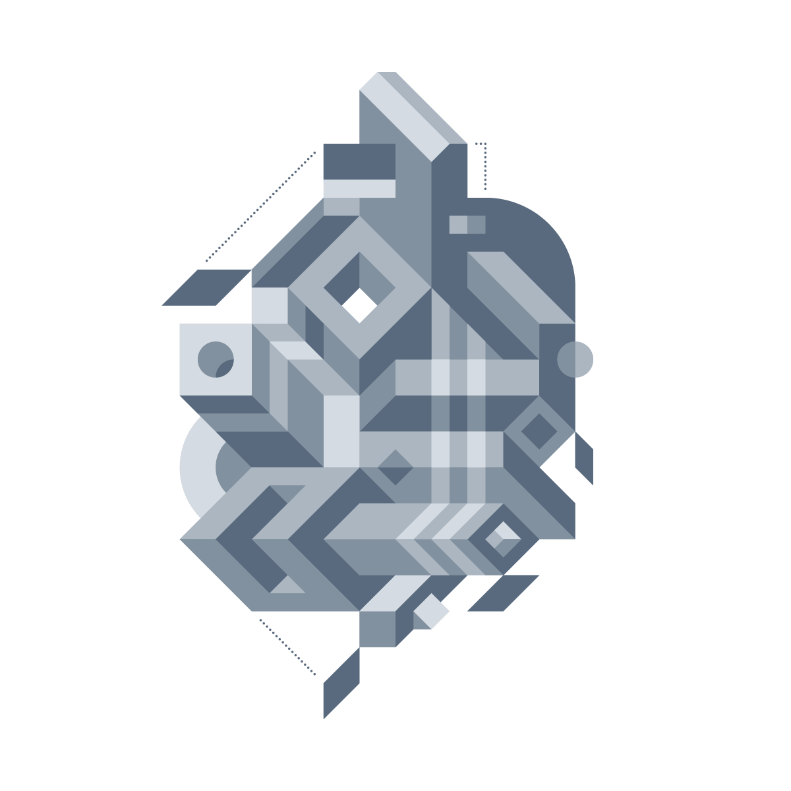
Cloth Simulation
CS184/284A · Homework 4 · Spring 2026
Muhammad Talha Ijaz
Overview
In this homework I built a real-time cloth simulator end-to-end. The simulator begins with a simple geometric idea — discretize a rectangular cloth into point masses — and gradually layers on the physics and rendering machinery that make it look believable. First, I created the cloth grid and connected nearby masses using structural, shearing, and bending springs. Then I advanced the system in time using force accumulation, Hooke's law, damped Verlet integration, and Provot's strain limiting so the cloth could fall and settle without exploding numerically. After that, I handled collisions against spheres and planes, then added self-collision using spatial hashing so the cloth can fold onto itself without every point mass checking every other point mass. Finally, I implemented a set of GLSL shaders — diffuse, Blinn–Phong, texture mapping, bump mapping, displacement mapping, environment-mapped reflection, and a custom shader — to make the simulated cloth readable and expressive in real time.
The most interesting part of the assignment for me was seeing how much of the final behavior comes from the interaction of many small constraints rather than one complicated formula. Changing \(k_s\), density, or damping changes the motion dramatically, but the same underlying point-mass representation still supports all of those behaviors. Similarly, bump mapping and displacement mapping use the same height texture but produce very different visual results because one changes normals while the other changes geometry. The project also made the CPU/GPU division clear: the C++ simulation updates the cloth positions, while the GLSL shaders take those positions and turn them into materials at interactive rates. Overall, this assignment connected the physical simulation side of graphics with the rendering pipeline in a way that made the full cloth system feel much more complete.
Part 1: Masses and springs
Overview
Part 1 lays the foundation for the entire cloth simulator by building the discrete representation of the cloth itself — an evenly spaced grid of point masses connected together by three different families of springs.
This network of masses and springs is what every subsequent part (integration, collision handling, self-collision, and shading) will operate on, so getting the grid construction right is essential.
Our task is to implement Cloth::buildGrid in cloth.cpp, which populates the point_masses and springs vectors of the Cloth struct based on the scene's width, height, resolution, and pinned vertices.
Implementation
Laying out the grid of point masses
We begin by computing the horizontal and vertical spacing between neighboring masses:
dx = width / (num_width_points - 1) and dy = height / (num_height_points - 1).
This guarantees that the first mass lands at (0, 0) on the varying plane and the last mass lands at (width, height).
We then walk the grid with two nested loops — the outer loop over yi (rows) and the inner loop over xi (columns) — so that masses end up stored in row-major (x-axis) order inside point_masses.
This matches the convention the renderer and mesh builder expect; a 2-D index (xi, yi) maps to the 1-D vector index yi * num_width_points + xi.
The mass's world position depends on the cloth's orientation.
If the orientation is HORIZONTAL, we place the mass at (xi * dx, 1.0, yi * dy) — the y coordinate is fixed at 1 and the mass varies across the xz plane.
If the orientation is VERTICAL, we place the mass at (xi * dx, yi * dy, z_rand), where z_rand is a small random offset in the range [-1/1000, 1/1000] sampled with rand().
This tiny perturbation on the z axis breaks the perfect planarity of the vertical cloth, which prevents numerical symmetry issues later when the cloth starts to fall.
For each mass, we also check whether its (xi, yi) index appears in the scene's pinned vector.
If so, we construct the PointMass with pinned = true; otherwise we pass false.
Pinned masses remain stationary in all later simulation steps.
Connecting masses with springs
Once all masses exist in point_masses, we make a second pass over the grid to add the springs.
Doing this in a second pass (rather than during the first loop) is important — it means every neighbor mass has already been created before we try to point at it, which keeps the pointer arithmetic safe.
For each mass at grid index (xi, yi), we add the following springs, being careful with edge cases so we never reach outside the grid:
- Structural springs (resist stretching and compression): connect to the mass to the left at
(xi-1, yi)and the mass above at(xi, yi-1). - Shearing springs (resist in-plane skew): connect to the mass at the upper-left diagonal
(xi-1, yi-1)and the mass at the upper-right diagonal(xi+1, yi-1). - Bending springs (resist folding): connect to the mass two to the left at
(xi-2, yi)and the mass two above at(xi, yi-2).
Each spring is constructed with springs.emplace_back(pm_a, pm_b, type), where type is one of STRUCTURAL, SHEARING, or BENDING.
The Spring constructor automatically sets rest_length to the initial distance between the two endpoints, which becomes the spring's target length when we start computing forces in Part 2.
We only add a spring when both endpoints actually exist in the grid (e.g. bending springs only get created once xi > 1 or yi > 1), which avoids out-of-bounds indexing.
Finally, the starter code calls buildClothMesh after buildGrid to build the triangle mesh used for shaded rendering — two triangles per quad, UV coordinates per vertex, and halfedge connectivity.
Together these produce both the spring network (visible as the wireframe) and the triangle mesh (used for Phong-style shaders in Part 5).
Screenshots from scene/pinned2.json
For the write-up we loaded scene/pinned2.json in Wireframe mode and picked a camera angle where the grid of masses and the spring lines are both clearly visible.
pinned2.json uses a horizontal cloth with two pinned corners along the top edge.
The first screenshot shows the complete wireframe of the mesh — each line segment here corresponds to a spring in the springs vector, and every intersection corresponds to a point mass in point_masses.
The following three screenshots were captured from the same scene and viewpoint, with only the spring-type toggles in the Simulation GUI changed; this lets us visually separate each family of springs.
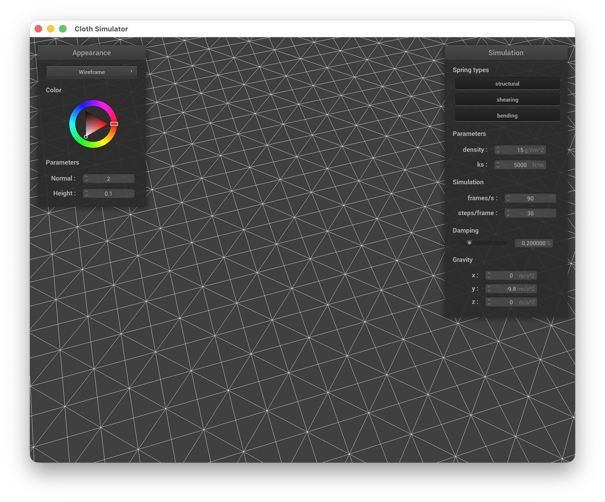
scene/pinned2.json: full wireframe overview with all three spring types enabled. Every mass is at a line intersection and every spring is a line segment.|
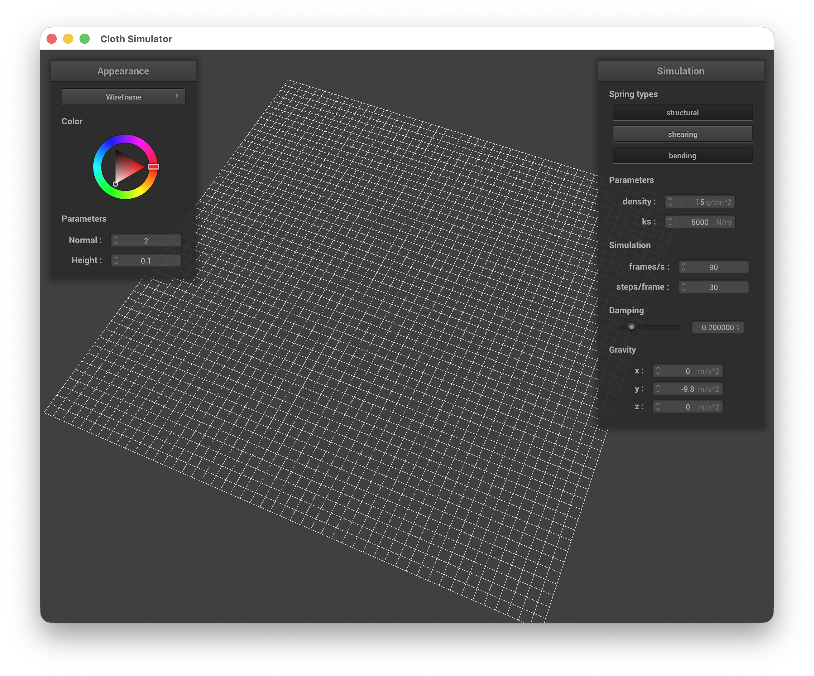 (1) Without any shearing constraints. Only structural and bending springs are visible, so the mesh shows horizontal and vertical lines (plus the longer two-step bending springs) but no diagonals.
|
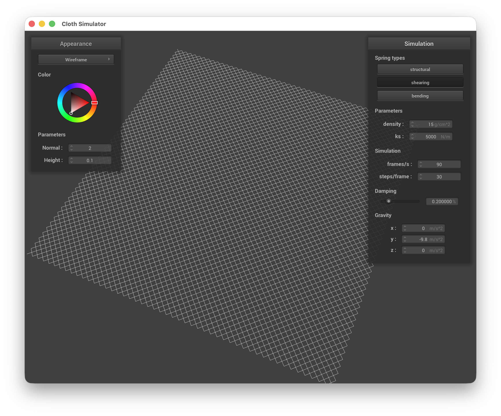 (2) Only shearing constraints. Structural and bending are disabled, leaving just the two diagonals in each grid cell — the pattern looks like a dense lattice of "X" shapes with no axis-aligned edges.
|
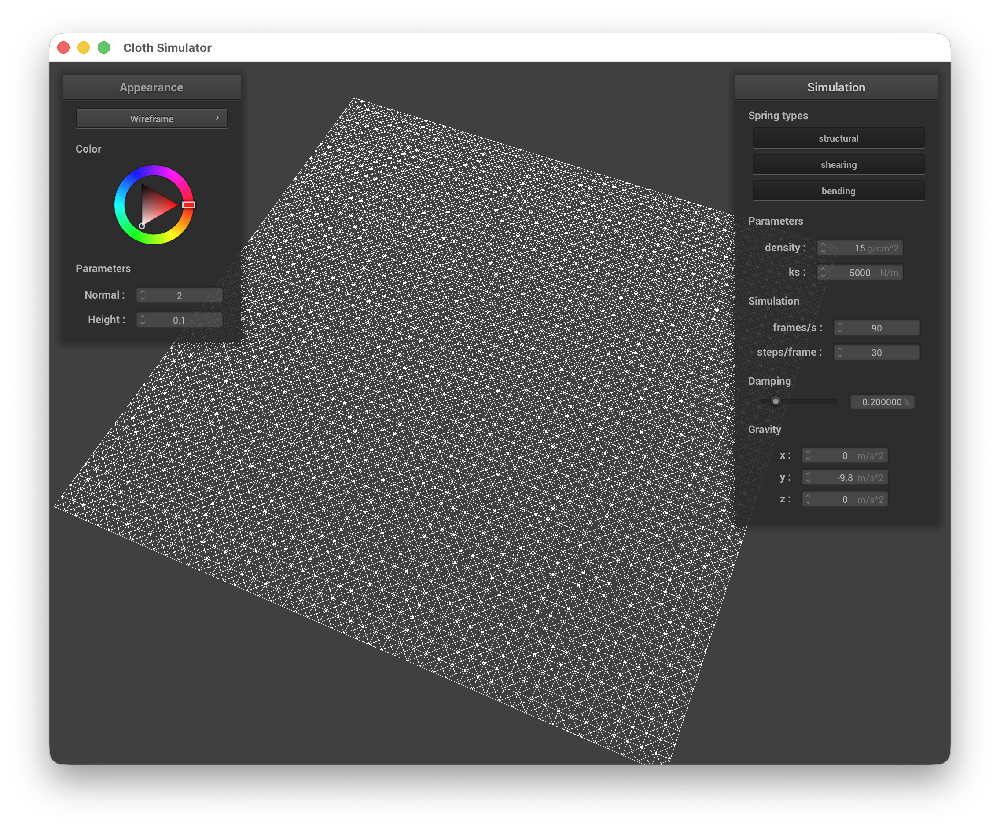 (3) All constraints enabled. Structural, shearing, and bending springs are all drawn together — the result is the full dense wireframe with both the axis-aligned grid and the two diagonals in every cell.
|
Observations
Toggling the spring types in the GUI is a direct visual sanity check that each family is connected correctly.
When shearing is disabled (1), the diagonals disappear cleanly and only axis-aligned connections remain, confirming that shearing springs exclusively follow the two diagonals of each cell.
When only shearing is enabled (2), every axis-aligned connection vanishes and we are left with just the diagonal "X" pattern — exactly what we expect from the upper-left and upper-right diagonal connections.
With all constraints enabled (3), the combined wireframe shows the superposition of all three families and matches the overview screenshot, which gives us confidence that our buildGrid is constructing the right network of masses and springs.
Part 2: Simulation via numerical integration
Overview
Part 2 turns the static mass-spring network from Part 1 into a time-stepped simulation.
Each substep we compute spring forces via Hooke's law, apply gravity as an external acceleration, integrate positions with Verlet integration (with damping), and enforce a deformation constraint so springs never stretch beyond 110% of their rest length (Provot 1995).
All of this lives in Cloth::simulate in cloth.cpp, called once per simulation substep from the app loop with timestep delta_t = 1 / (frames_per_sec * simulation_steps).
Implementation
2.1 Total force on each mass
In our model there are two kinds of forces: external forces (such as gravity) that act on every mass uniformly, and spring correction forces that arise from the state of individual springs.
Every PointMass has a forces vector which we use as an accumulator.
At the very start of each simulate call we reset forces to zero on every point mass so that forces from a previous timestep don't bleed into the current one.
We then apply the external forces uniformly using Newton's second law.
The starter passes gravity (and any other external accelerations) through the external_accelerations vector.
Conceptually, this contributes a force \(F_{ext} = m \cdot a_{ext}\) to every point mass, where \(m\) is the mass computed from width * height * density / (num_width_points * num_height_points).
In our implementation we save a small amount of arithmetic by adding the external accelerations directly during the integration step (after dividing accumulated spring forces by \(m\)), which is mathematically identical but avoids one redundant multiply-then-divide.
Next we apply the spring correction forces.
We loop over every Spring in springs and skip any whose constraint type has been disabled in ClothParameters (we check enable_structural_constraints, enable_shearing_constraints, and enable_bending_constraints).
For a spring between masses \(a\) and \(b\) with positions \(p_a\), \(p_b\), we compute the vector along the spring \(d = p_b - p_a\), its length \(L = \|d\|\), and the unit direction \(\hat{d} = d / L\).
Hooke's law then gives the magnitude of the restoring force:
\( \|F_s\| \;=\; k_s \cdot (L - L_0) \)
where \(L_0\) is the spring's rest_length and \(k_s\) is the global stiffness from the scene.
For bending springs we multiply \(k_s\) by 0.2 so that they are weaker than structural and shearing springs, as the spec suggests — this keeps the cloth pliable while still resisting sharp folds.
The full force vector \(F_s = \|F_s\| \cdot \hat{d}\) is added to mass \(a\), and the equal and opposite force \(-F_s\) is added to mass \(b\), accumulating into their respective forces vectors.
2.2 Verlet integration
Once the per-mass force accumulator is ready, we perform numerical integration to find the new position. Among the available integrators (explicit/implicit Euler, Runge-Kutta, etc.) we use Verlet integration, an explicit scheme that is both fairly accurate and easy to implement. Standard Verlet approximates velocity using positions from the previous timestep, so it doesn't need an explicit velocity vector stored on the mass. Starting from the usual kinematic update
\( x_{t+dt} \;=\; x_t \;+\; v_t \cdot dt \;+\; a_t \cdot dt^2 \)
we substitute the approximation \(v_t \cdot dt \approx x_t - x_{t-dt}\) to get
\( x_{t+dt} \;=\; x_t \;+\; (x_t - x_{t-dt}) \;+\; a_t \cdot dt^2 \)
To simulate energy loss from friction and heat, we then scale the velocity-like term by \((1 - d)\), where \(d\) is a small damping value in [0, 1]:
\( x_{t+dt} \;=\; x_t \;+\; (1 - d)\,(x_t - x_{t-dt}) \;+\; a_t \cdot dt^2 \)
The spec specifies that cp->damping is given in units of percent, so we compute damp_scale = 1 - cp->damping / 100 before multiplying.
Each substep, for every unpinned mass we: compute total acceleration accel = forces / mass + sum(external_accelerations), save the current position into a temporary, overwrite position with the damped Verlet update above, and finally store the saved value into last_position.
Pinned masses are skipped entirely and snapped back to start_position after the integration pass so they never drift.
2.3 Provot strain limiting
Even with integration working, very stiff springs and large timesteps can cause springs to stretch unreasonably far during a single step.
Following Section 5 of the Provot 1995 SIGGRAPH paper, we add a deformation constraint that runs after the Verlet update: each spring's length must be at most 110% of its rest_length at the end of the timestep.
For each spring we compute its current length \(L\). If \(L \le 1.1 \cdot L_0\) we leave it alone. Otherwise, we compute the excess \(\Delta = L - 1.1 \cdot L_0\) and shorten the spring along its direction \(\hat{d}\) by that amount. We keep the spring's direction identical; only the distance between the two masses changes. If both endpoints are free to move, we apply half the correction to each — mass \(a\) moves \(+\hat{d} \cdot \Delta/2\) and mass \(b\) moves \(-\hat{d} \cdot \Delta/2\). If one endpoint is pinned, the pinned mass cannot move, so the other mass absorbs the entire correction. If both endpoints are pinned, we do nothing — and as the spec hints, this case can't actually violate the constraint by construction, because pinned masses never leave their start positions, so the spring is always at exactly its initial length, which is its rest length.
Together, these three steps (force accumulation, damped Verlet integration, and the Provot projection) give us a stable and visually plausible cloth simulation that works reliably even with large timesteps and stiff springs.
Parameter experiments
Effect of spring constant \(k_s\)
With a very low \(k_s\) (e.g. 50 N/m) the springs offer almost no resistance to stretching. From start, the cloth drops quickly and stretches far below the pinned points, forming deep, loose folds with visible rippling along the bottom edge. It oscillates for a while before settling into a deeply sagging rest position because the weak springs barely counteract gravity. At the default \(k_s = 5000\) the cloth falls smoothly, overshoots slightly, and comes to rest with a moderate, natural-looking drape — the springs are strong enough to hold the cloth's weight without excessive stretching. At a very high \(k_s\) (e.g. 50000) the cloth barely deforms at all; it drops only slightly from the start position and settles almost immediately into a nearly flat profile with only a gentle dip between the pinned corners, behaving more like a stiff sheet of paper than fabric.
|
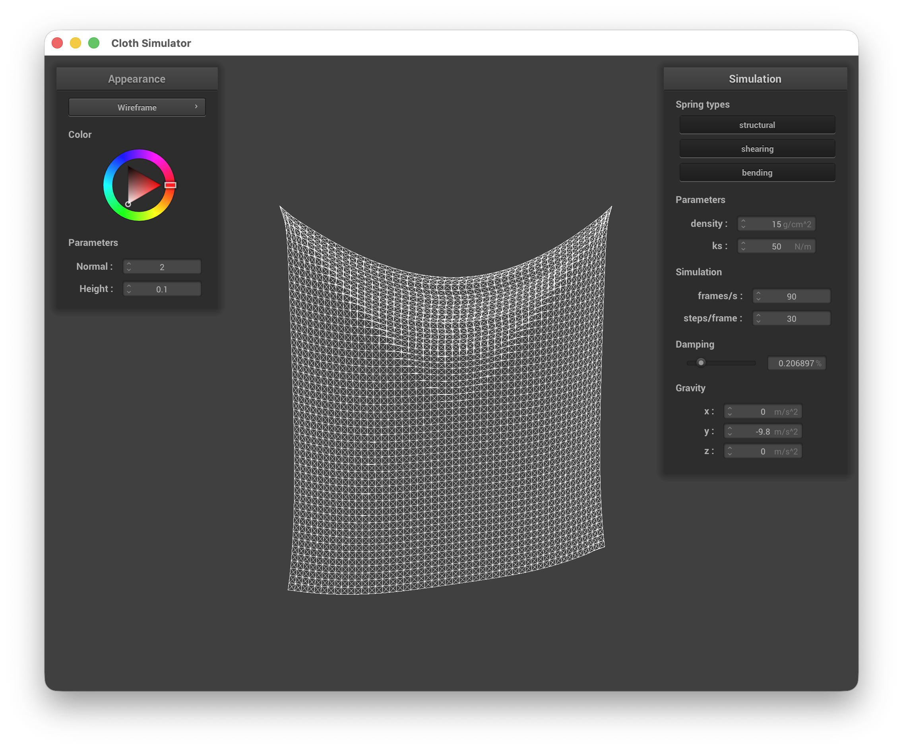 \(k_s = 50\): very stretchy, deep sag.
|

\(k_s = 5000\) (default): moderate drape.
|
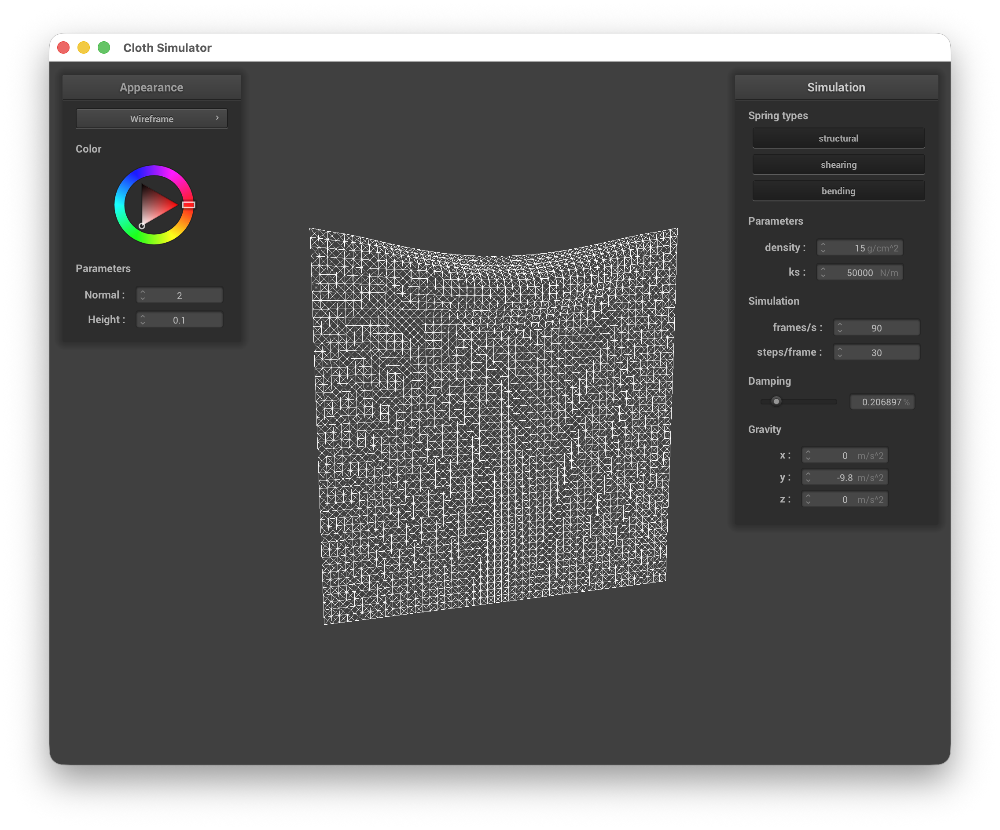 \(k_s = 50000\): stiff, nearly flat.
|
Effect of density
Density controls the mass of each point mass via \(m = \frac{\text{width} \times \text{height} \times \rho}{N_w \times N_h}\). At low density (e.g. 1 g/cm²) the cloth is very light, so from start it falls gently and settles almost immediately with very little sag — the springs have no trouble supporting the small gravitational load, and there is barely any overshoot or oscillation. At the default density of 15 g/cm² the cloth drops at a moderate pace, bounces slightly, and settles into a balanced drape within a few seconds. At high density (e.g. 150 g/cm²) gravity dominates: from start the cloth plunges quickly and stretches the springs significantly, oscillating longer before coming to rest in a deeply sagging position that looks very similar to a low-\(k_s\) result. This makes sense because both low stiffness and high mass increase the ratio of gravitational to elastic force.
|
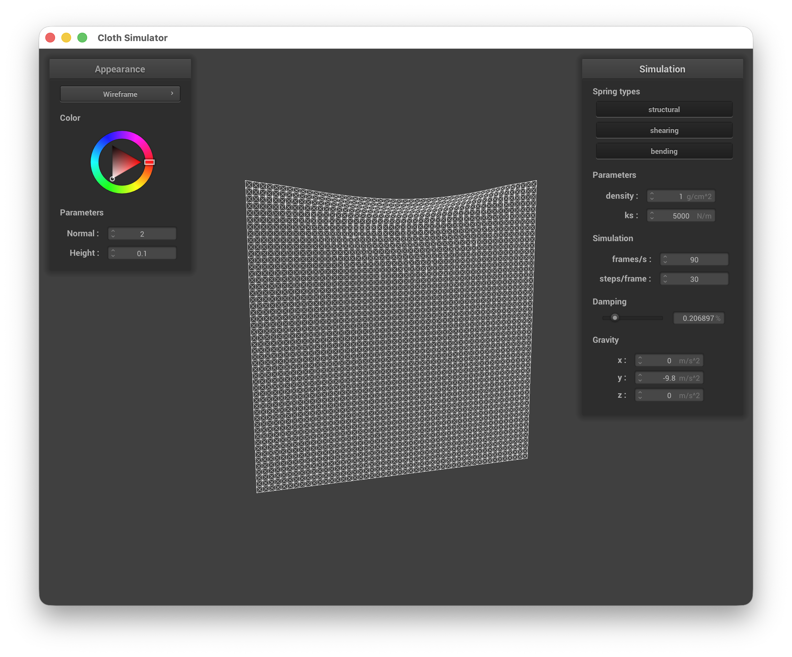 Density = 1: light cloth, minimal sag.
|
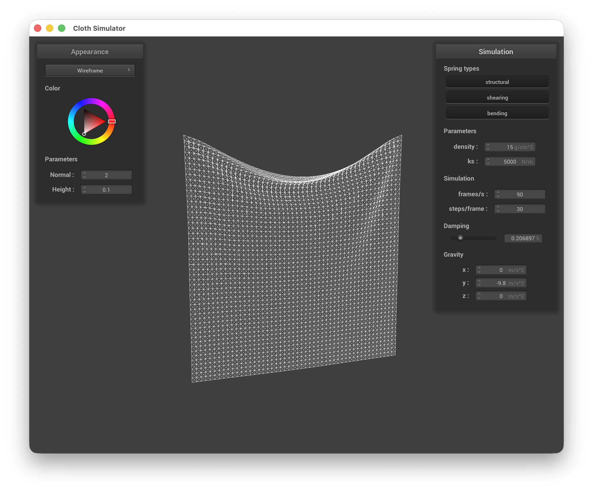 Density = 15 (default): balanced drape.
|
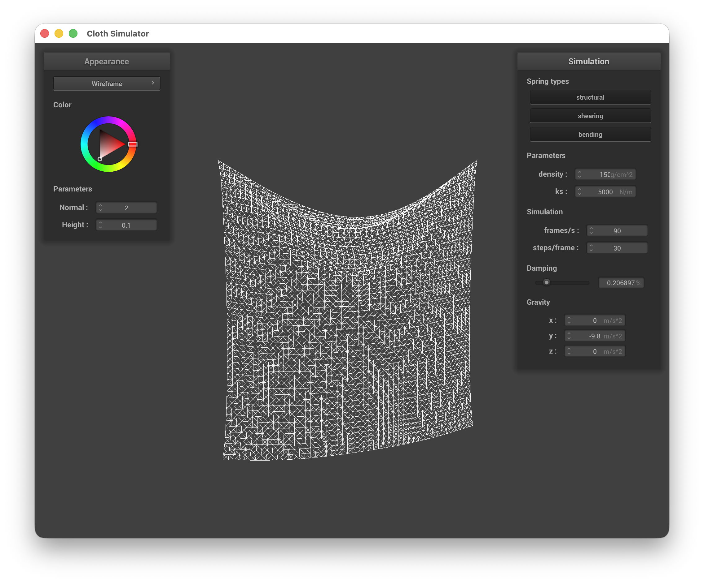 Density = 150: heavy cloth, deep sag.
|
Effect of damping
We observe the cloth from the moment it is released (un-paused) until it comes to rest. With very low damping (close to 0%) the cloth swings back and forth many times, oscillating visibly for a long time before the tiny energy drain finally stills it. At a moderate value (e.g. 0.2%, the default) the sheet falls, overshoots slightly, and settles within a few seconds — a good balance between responsiveness and stability. At high damping (close to 1%) the cloth descends slowly and smoothly, almost as if moving through honey, with virtually no overshoot or oscillation.
|
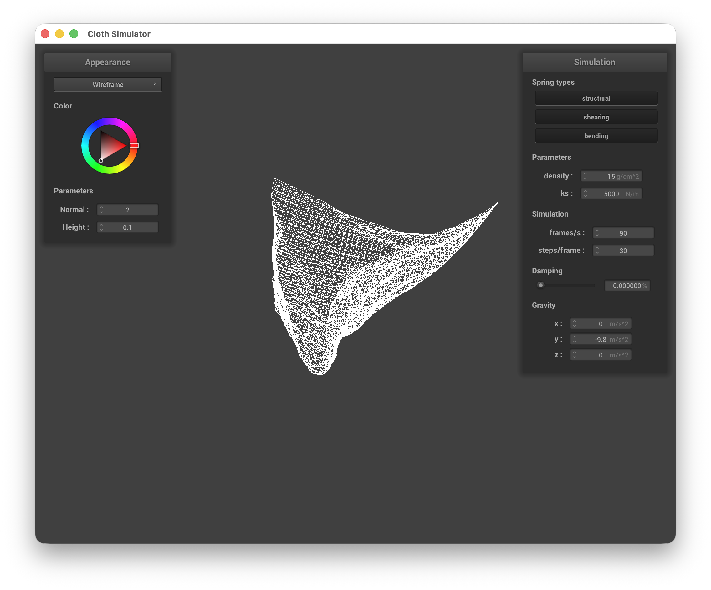 Damping ≈ 0%: lots of oscillation.
|

Damping = 0.2% (default): quick settle.
|
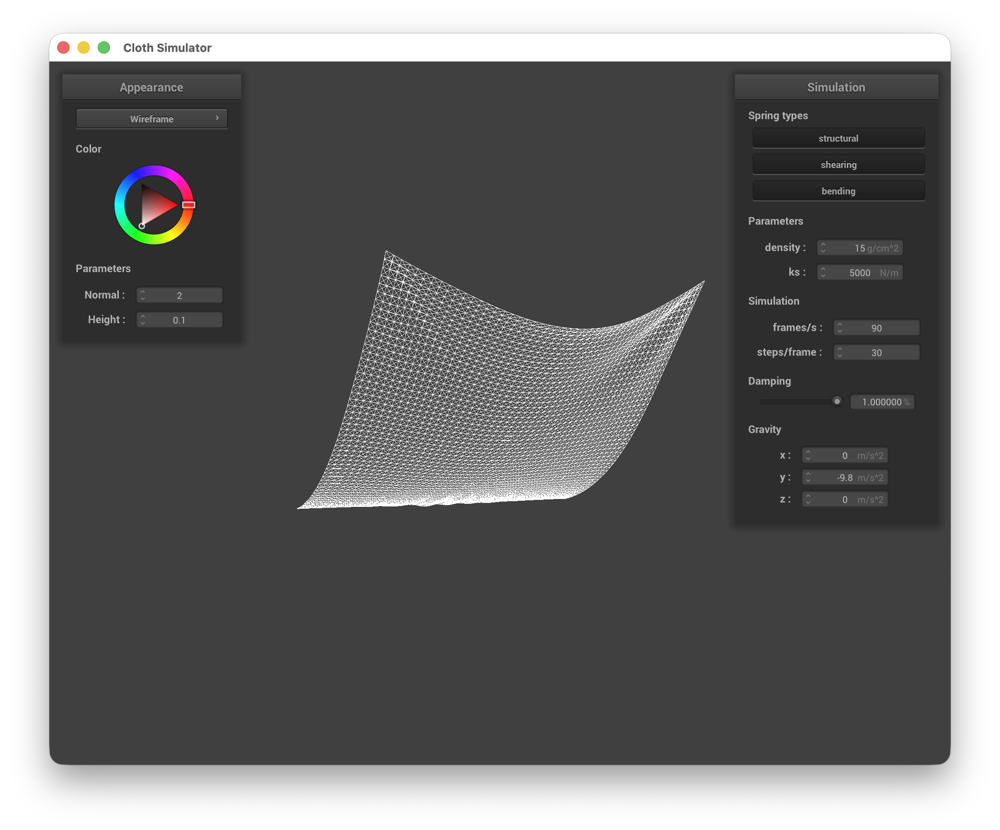 Damping ≈ 1%: slow, no overshoot.
|
Final resting state — pinned4.json
Below is the cloth from scene/pinned4.json (four pinned corners) at its final resting state with default parameters, rendered with the Normal shader.

pinned4.json: final resting state with default parameters (\(k_s = 5000\), density = 15, damping = 0.2%).Part 3: Handling collisions with other objects
Overview
With the mass-spring integrator in place, the cloth now falls freely through any scene — but real cloth interacts with the world around it.
Part 3 adds the first layer of collision handling by giving every CollisionObject a collide(PointMass &pm) method that detects penetration and corrects the point mass's position so it ends up just on the object's surface.
We implement this for two primitive shapes (Sphere and Plane), and we wire the cloth's simulate loop to call collide on every point mass against every collision object each substep.
The collision correction is applied after Verlet integration and the Provot projection, so by the time we check for penetration, the mass's proposed new position already reflects gravity, springs, and the 110% strain limit.
Integration with simulate
After the Verlet and Provot passes in Cloth::simulate, we loop over every point mass and every collision object and call the object's collide.
We skip pinned masses because they are already locked to their start positions and a collision correction would be a no-op (and potentially overwrite the pin).
The ordering matters: gravity and spring forces push the mass through the object during integration, and only then does collision handling nudge it back onto the surface.
3.1 Sphere collisions
Sphere stores the sphere's origin, its radius (with precomputed radius2), and a friction coefficient in \([0, 1]\).
Given a point mass, we first compute the vector from the sphere centre to the mass:
\( \mathrm{diff} \;=\; \mathrm{pm.position} - \mathrm{origin} \)
If \(\|\mathrm{diff}\|^2 \ge r^2\) the mass is already outside the sphere and there is nothing to do, so we return early (using the squared norm avoids a square root on the common non-collision path). Otherwise the mass is inside the sphere and we need to project it back onto the surface.
To find the tangent point, we extend the ray from the sphere origin through the point mass until it hits the sphere:
\( \mathrm{tangent} \;=\; \mathrm{origin} \;+\; r \cdot \widehat{\mathrm{diff}} \)
The correction vector is the displacement from the mass's previous-timestep position to this tangent point:
\( \mathrm{correction} \;=\; \mathrm{tangent} - \mathrm{pm.last\_position} \)
Finally, we scale the correction by \((1 - \mathrm{friction})\) to simulate tangential friction between the cloth and the sphere, and update the mass's position:
\( \mathrm{pm.position} \;=\; \mathrm{pm.last\_position} \;+\; \mathrm{correction} \cdot (1 - \mathrm{friction}) \)
With friction = 0 the mass would slide frictionlessly along the sphere (the correction is applied in full), and with friction = 1 it "sticks" in place at last_position.
The default sphere.json uses a moderate friction of 0.3, which looks like a slightly grippy surface that lets the cloth slide into a drape but not slip off entirely.
3.2 Plane collisions
Plane stores a point on the plane point, a unit normal, and a friction coefficient.
A plane divides space into two half-spaces: the side that the plane normal points into (positive signed distance) and the opposite side (negative signed distance).
Our test for whether a point mass crossed the plane this timestep is to compute the signed distances of the previous and current positions:
\( d_{\text{last}} = (\mathrm{pm.last\_position} - \mathrm{point}) \cdot \mathrm{normal}, \quad d_{\text{now}} = (\mathrm{pm.position} - \mathrm{point}) \cdot \mathrm{normal} \)
If \(d_{\text{last}}\) and \(d_{\text{now}}\) have the same sign, the mass stayed on one side and we return early. If they have opposite signs, the mass crossed the plane between frames and we need to correct it.
We compute the tangent point — the exact location where the straight line from last_position to position crosses the plane — via a standard parametric intersection:
\( t \;=\; \frac{d_{\text{last}}}{d_{\text{last}} - d_{\text{now}}}, \qquad \mathrm{tangent} \;=\; \mathrm{pm.last\_position} \;+\; t\cdot(\mathrm{pm.position} - \mathrm{pm.last\_position}) \)
Landing exactly on the plane would put the mass at distance zero from it, which can cause jitter and repeated collisions in subsequent frames due to floating-point error.
To avoid this, we nudge the tangent point a tiny bit back toward the side the mass came from, using the provided SURFACE_OFFSET constant (0.0001):
\( \mathrm{offset\_tangent} \;=\; \mathrm{tangent} \;+\; \mathrm{sign}(d_{\text{last}}) \cdot \mathrm{normal} \cdot \mathrm{SURFACE\_OFFSET} \)
Picking the sign from \(d_{\text{last}}\) (rather than hard-coding it) means the collision works correctly no matter which way the plane is oriented or which side the cloth approaches from. The final correction and update follow the same pattern as the sphere case:
\( \mathrm{correction} \;=\; \mathrm{offset\_tangent} - \mathrm{pm.last\_position}, \qquad \mathrm{pm.position} \;=\; \mathrm{pm.last\_position} \;+\; \mathrm{correction} \cdot (1 - \mathrm{friction}) \)
Results — cloth on sphere
With the sphere collision working, the cloth now falls cleanly and drapes over the sphere without passing through it.
The spec asks us to compare three values of \(k_s\) to see how stiffness changes the drape.
All three runs use scene/sphere.json (default density, damping, and friction) and are captured once the cloth has fully settled to rest; the Normal shader is used for the shaded view.
|
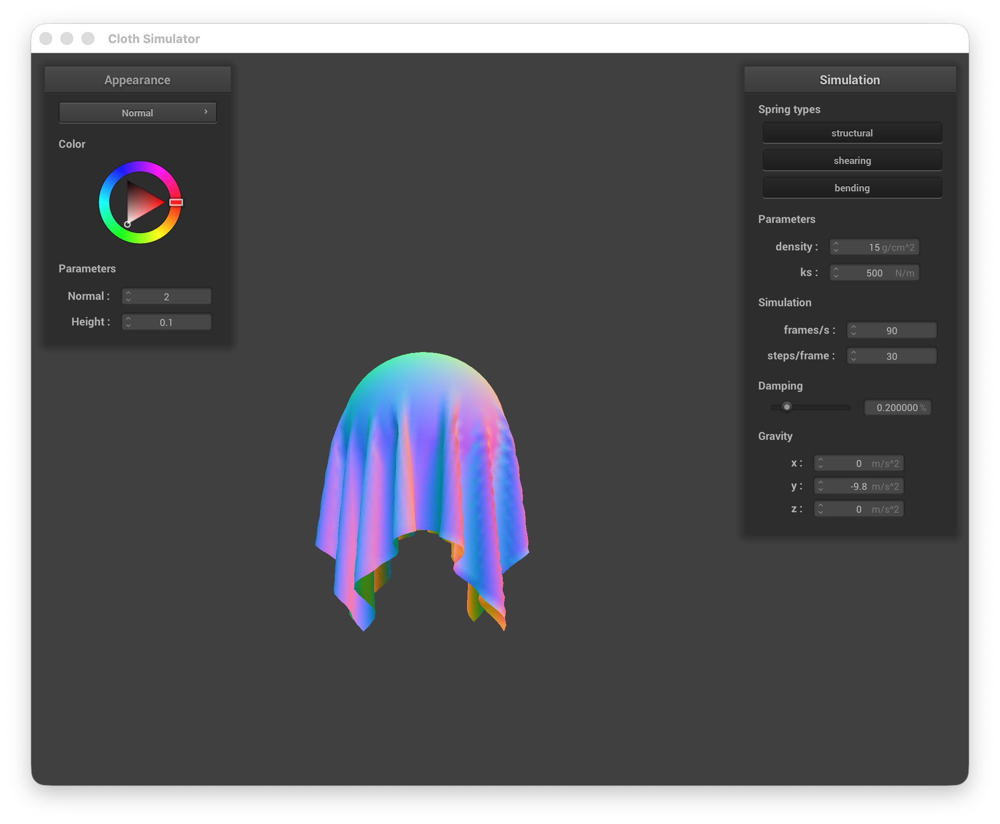 \(k_s = 500\): soft springs, the cloth hugs the sphere tightly and hangs with deep, loose folds wrapping far below the equator.
|
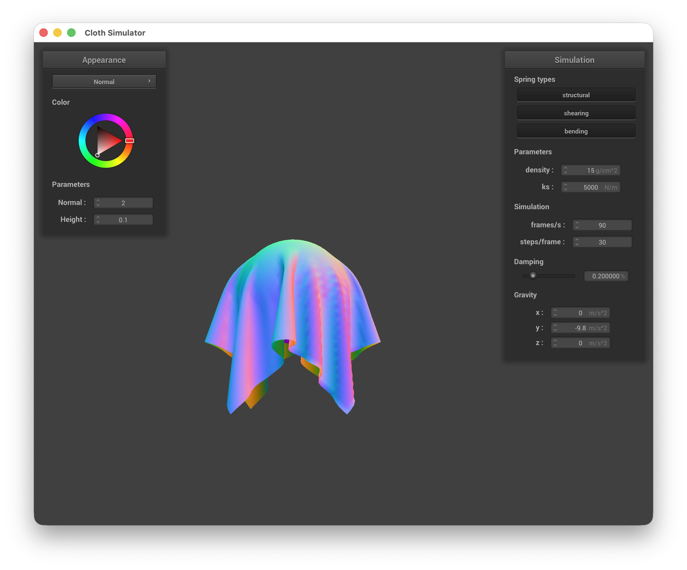 \(k_s = 5000\) (default): a natural drape. The cloth conforms to the top of the sphere and forms moderate folds around the sides before hanging straight below.
|
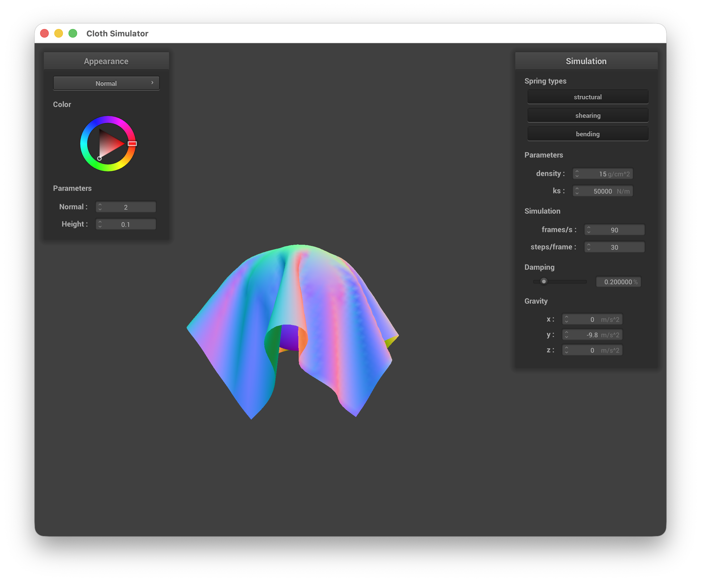 \(k_s = 50000\): very stiff springs. The cloth barely bends; it tents over the sphere almost like a rigid sheet with only a gentle curve over the top and sharp creases where it meets the equator.
|
The trend matches our Part 2 observations: low \(k_s\) produces soft, fabric-like behavior with many fine folds; high \(k_s\) behaves like a stiff sheet that resists deformation. The middle case at \(k_s = 5000\) looks the most natural for a piece of cloth. In all three cases the cloth stays exclusively on the outside of the sphere and eventually comes to rest — strong visual confirmation that the collision correction is working.
Results — cloth on plane
Using scene/plane.json, the cloth falls under gravity and settles flat against the horizontal plane below, with a small surface offset keeping it visually just above the plane surface.
The two screenshots below show the final resting state from two different camera angles so both the top of the draped cloth and the way it sits on the plane are clearly visible.
|
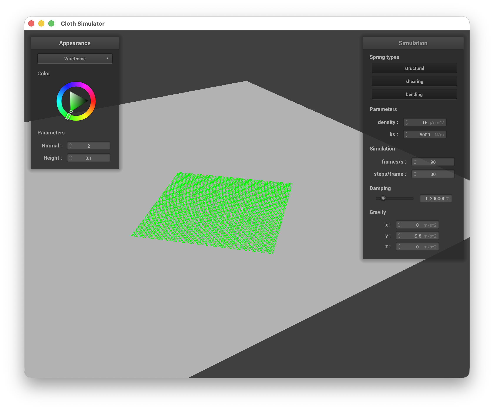 scene/plane.json: cloth at rest on the plane — first view. |

scene/plane.json: the same resting state from a second angle, showing how the cloth conforms to the plane just above its surface. |
The cloth does not fall through, does not visibly intersect the plane, and does not jitter once at rest — the three behaviors we wanted from the plane collision implementation.
The SURFACE_OFFSET displacement keeps the cloth visibly just above the surface in both views, which prevents z-fighting and the kind of repeated "bouncing" collisions that would otherwise happen when a mass lands exactly on the plane.
Part 4: Handling self-collisions
Overview
Even with sphere and plane collisions working, the cloth cheerfully clips through itself in any scene where one part of the sheet folds onto another. Part 4 fixes this by giving the cloth self-collision handling. The naïve approach — check every pair of point masses each step — is \(O(n^2)\), which becomes prohibitive as the grid resolution grows. Instead, we implement spatial hashing: at each simulation substep we bucket every point mass into a 3D box based on its position, and when testing a given mass for self-collision we only look at the other masses that share its box. This reduces the number of pair checks dramatically while still catching all plausibly-close neighbors.
Implementation
4.1 Cloth::hash_position
The hash function partitions 3D space into uniform axis-aligned boxes of dimensions \(w \times h \times t\) where
\( w = \frac{3 \cdot \text{width}}{\text{num\_width\_points}}, \qquad h = \frac{3 \cdot \text{height}}{\text{num\_height\_points}}, \qquad t = \max(w, h) \)
The factor of 3 makes each box comfortably larger than the spacing between neighbouring masses, which reduces the chance that a genuine near-collision sits just across a box boundary and gets missed.
For a given position, we truncate each coordinate down to the lower corner of its box using fmod:
\( b_x = x - (x \bmod w), \qquad b_y = y - (y \bmod h), \qquad b_z = z - (z \bmod t) \)
We then combine the three truncated coordinates into a single float using three large primes (31, 47, 97) so that different boxes are very unlikely to collide in the hash table:
\( \text{key} = 31 \cdot b_x + 47 \cdot b_y + 97 \cdot b_z \)
Any two point masses that end up in the same 3D box will produce the exact same key and therefore land in the same hash bucket.
4.2 Cloth::build_spatial_map
At the start of every substep we rebuild the spatial hash from scratch — the cloth is constantly moving, so yesterday's buckets aren't useful.
We first delete the vectors in the existing map and clear it, then iterate over every point mass and compute its key with hash_position.
If the key isn't present in map we insert a new vector<PointMass *>; either way we push the mass's pointer into the bucket.
After this pass, every box in use maps to the exact list of point masses sitting inside it.
4.3 Cloth::self_collide
For a given point mass pm, we compute its own hash key, look up the bucket of candidates in map, and iterate through them.
We skip the pointer to pm itself (a mass should never self-collide with itself).
For each remaining candidate, we compute the distance d to pm; if \(d < 2 \cdot \text{thickness}\), the two masses are closer than the cloth's own thickness allows and we need to push them apart.
The per-pair correction vector has direction equal to the unit vector from the candidate to pm (so the push is along the line connecting them), and magnitude \(2 \cdot \text{thickness} - d\) (exactly enough to restore the minimum allowed distance):
\( \vec{c}_i \;=\; \hat{d}_i \cdot (2t - d_i) \)
We only apply the correction to pm, not the candidate — each candidate gets its own call to self_collide where it sees pm as a candidate and pushes itself away in the opposite direction, so force pairs still balance out in aggregate.
Instead of applying each correction independently (which can over-correct when a mass is close to many neighbours), we accumulate them, average over the number of colliding pairs, and then scale by 1 / simulation_steps.
The division by simulation_steps spreads the correction across the substeps of a single frame, which keeps the cloth from jumping discontinuously when many contacts happen at once.
Integration with simulate
Each substep, immediately after the Verlet + Provot passes, we call build_spatial_map() once, then loop over every non-pinned point mass and call self_collide(pm, simulation_steps).
The sphere/plane collisions from Part 3 run afterwards, so primitive collision correction always has the last word if a self-collision push happened to nudge a mass into a sphere or through the floor.
Results — falling and folding on itself
The clearest way to see self-collision at work is to watch the scene/selfCollision.json cloth from release to rest: a vertical sheet falls under gravity and collapses on top of itself on the floor.
Below we show six frames spanning that process with the default parameters (\(k_s = 5000\), density = 15 g/cm², damping = 0.2%, Normal shader).
The cloth folds through several layers without any of them passing through another, and eventually settles onto the plane in a stacked, crumpled pile.

(1) Release — the sheet starts to fall under gravity, still roughly planar.
|

(2) First self-contact — bottom portion buckles as the top continues to fall.
|

(3) Early fold — the cloth begins doubling up, with two layers visibly separated by roughly 2·thickness.
|

(4) Deeper folding — more layers appear as the rest of the sheet comes down.
|

(5) Nearly settled — the pile thickens and stops clearly above the plane surface.
|

(6) Restful state — cloth is mostly still with a crumpled, stacked shape. (Some faint bounce remains because Verlet integration lacks explicit spring damping for static contacts, as noted in the spec.)
|
In every frame the layers remain visibly separated — the spatial hash is catching each near-contact and the pairwise correction is enforcing the \(2 \cdot \text{thickness}\) minimum distance.
The overall motion is also smooth: averaging corrections and scaling by 1/simulation_steps prevents jittering when many contacts happen at once.
Parameter experiments
Effect of spring constant \(k_s\)
We re-ran the same scene with a low spring constant (\(k_s = 500\)) and a high spring constant (\(k_s = 50000\)), keeping density and damping at their defaults. With a low \(k_s\) the cloth behaves like a very flexible, almost silk-like sheet: it drapes into many fine, tightly packed folds as it falls, and the final pile has lots of small wrinkles and is visibly deeper because the soft springs allow far more local deformation between the layers. With a high \(k_s\) the cloth behaves like a stiff, paper-like sheet: it tends to fold in a few large, flat creases rather than many small wrinkles, and the final shape has fewer distinct layers because the strong springs resist the sharp bends needed to produce fine folds. In both cases, the self-collision still prevents any clipping — the layers are just chunkier or finer depending on stiffness.

Low \(k_s = 500\): mid-fall, lots of small buckles forming.
|

Low \(k_s = 500\): settling onto itself with fine, tightly packed folds.
|

Low \(k_s = 500\): final pile — many thin wrinkled layers.
|

High \(k_s = 50000\): mid-fall, folds are broader and fewer.
|

High \(k_s = 50000\): settling with a few large, flat creases.
|

High \(k_s = 50000\): final pile — chunky, stiff-looking layers.
|
Effect of density
We also varied the density (with \(k_s\) and damping at their defaults). A low density (1 g/cm²) makes the cloth feel feather-light: it falls slowly, drifts onto itself almost lazily, and settles into a loose, fluffy pile with relatively few folds because the light cloth doesn't compress its own layers much. A high density (150 g/cm²) makes the cloth behave like a heavy wool blanket: it plunges quickly, and when it lands on itself the upper layers press down hard onto the lower ones, producing a flatter, denser pile with more layers crushed close to one another. The self-collision correction continues to prevent inter-penetration in both extremes — density only changes how hard the layers press on each other.

Density = 1: mid-fall, light and drifting.
|

Density = 1: settling into a loose, fluffy pile.
|

Density = 1: at rest — lightweight, airy pile.
|

Density = 150: mid-fall, heavy and fast-dropping.
|

Density = 150: upper layers pressing hard onto lower ones.
|

Density = 150: at rest — flat, dense, compressed pile.
|
Across all parameter settings, the key qualitative result is the same: the cloth folds onto itself rather than clipping through itself. This is the single most important behavior the self-collision code was supposed to deliver, and in every screenshot above we can verify it visually — no layer ever passes through another, and every fold maintains a visible gap of roughly \(2 \cdot \text{thickness}\).
Part 5: Shaders
For Homework 4 we capture all figures with the OS screenshot tool (there is no in-app hotkey). Each subsection below matches the Part 5 write-up checklist on the course site: pipeline explanation, Blinn–Phong decomposition, custom texture, bump and displacement with the same non-default height map, tessellation comparison, mirror shots, and a description of our extra-credit custom shader.
What is a shader program, and how do vertex and fragment shaders work together?
In the rasterization pipeline, geometry first enters a vertex shader, which runs once per vertex in parallel on the GPU.
Our vertex programs (for example Default.vert, Bump.vert, or Displacement.vert) read per-vertex attributes such as in_position, in_normal, in_tangent, and in_uv, multiply by the u_model matrix to move them into world space, and write varying outputs like v_position, v_normal, and v_uv that will be interpolated across each triangle.
The shader also sets gl_Position = u_view_projection * (transformed position), which is the clip-space corner the rasterizer uses to decide which pixels (fragments) lie inside the triangle.
After clipping and rasterization, a fragment shader runs once per fragment (roughly: per pixel sample).
It receives the interpolated values of those varyings—so each fragment gets a smoothly blended position, normal, and UV even though we only computed them at vertices.
Fragment code also reads uniforms that are identical for the whole draw call: light position and intensity, camera position, material knobs, and texture samplers.
Lighting and material effects therefore emerge from this cooperation: the vertex stage establishes where the surface is and how it is oriented in world space; the fragment stage evaluates BRDFs, samples textures, perturbs normals, or looks up a cubemap to output a final out_color.
Switching the shader dropdown in the simulator swaps only the fragment program (and occasionally the vertex program), while ClothSimulator::drawPhong keeps uploading the same triangle mesh.
Task 1 — Diffuse (Lambertian) shading
We implemented pure diffuse shading in Diffuse.frag.
At each fragment we compute a unit world normal \(\mathbf{n}\), a direction \(\mathbf{l}\) from the fragment toward the point light, distance \(r\), and the inverse-square falloff \(\mathbf{I}/r^2\) from u_light_intensity.
The outgoing radiance is \( \mathbf{L}_d = \mathbf{k}_d\, (\mathbf{I}/r^2)\, \max(0, \mathbf{n}\cdot\mathbf{l}) \) with \(\mathbf{k}_d = \texttt{u\_color.rgb}\) so the Appearance color wheel still tints the cloth.
This is the same Lambert term we used in the raytracer homework, but evaluated per pixel in real time.
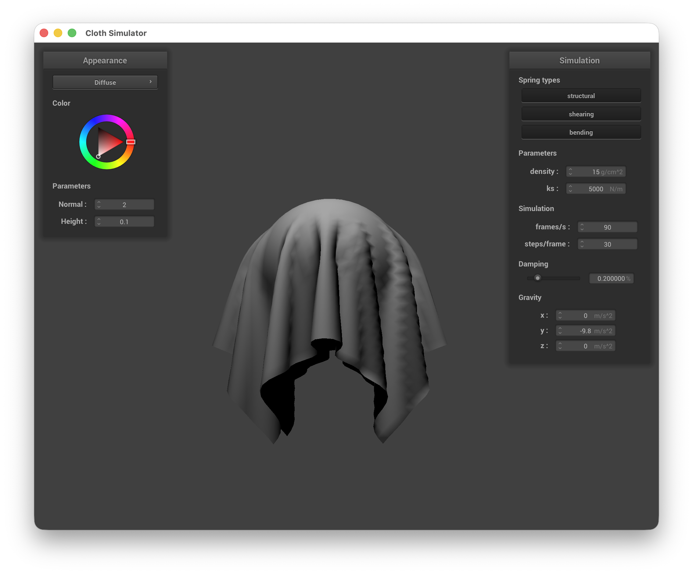
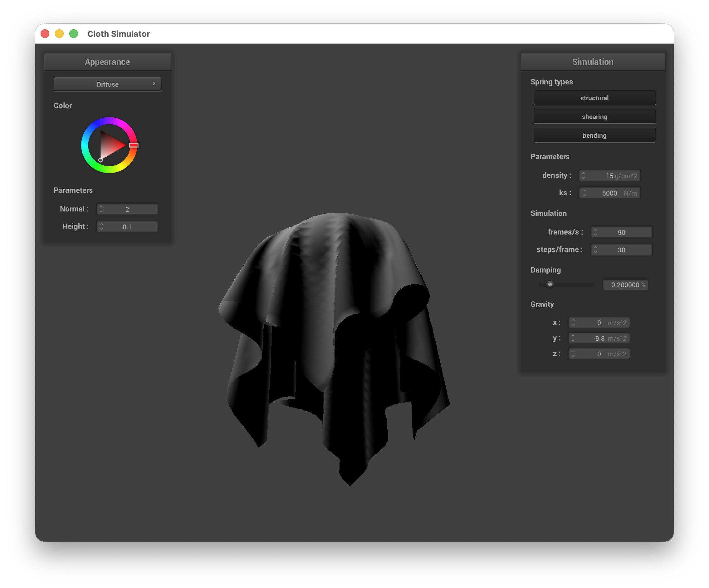
sphere.json). There is no specular highlight—only smooth shading from the cosine term.Task 2 — Blinn–Phong shading model (in our own words)
Blinn–Phong extends diffuse shading with two cheap approximations that still look convincing in real time.
First, an ambient term \(\mathbf{k}_a \mathbf{I}_a\) approximates indirect light by adding a small constant color everywhere so shadows are not perfectly black.
Second, a specular term models glossy highlights: instead of the mirror direction used in Phong’s original formulation, Blinn–Phong uses the half vector \(\mathbf{h} = \mathrm{normalize}(\mathbf{l} + \mathbf{v})\) between the light direction and the view direction \(\mathbf{v}\); when \(\mathbf{h}\) aligns with the normal, the surface is “halfway” between looking at the light and the camera, and we get a bright peak controlled by exponent \(p\) (shininess).
Putting it together,
\[
\mathbf{L} = \mathbf{k}_a \mathbf{I}_a
+ \mathbf{k}_d\, (\mathbf{I}/r^2)\, \max(0, \mathbf{n}\cdot\mathbf{l})
+ \mathbf{k}_s\, (\mathbf{I}/r^2)\, \max(0, \mathbf{n}\cdot\mathbf{h})^{p}.
\]
In Phong.frag we use \(\mathbf{k}_d = \texttt{u\_color.rgb}\), \(\mathbf{k}_a = 0.08\), \(\mathbf{k}_s = 0.7\), \(\mathbf{I}_a \approx (0.35,0.35,0.38)\), and \(p = 48\), with the same point light as diffuse.
To satisfy the write-up requirement of isolating each term, we added a small UI control in clothSimulator.cpp—Phong write-up mode—that sets an integer uniform u_phong_debug_mode on the Phong shader only: 1 outputs ambient alone, 2 diffuse alone, 3 specular alone, and 0 the full sum.
We paused the sim, kept the camera fixed, and cycled the combo between captures so the four images are directly comparable.
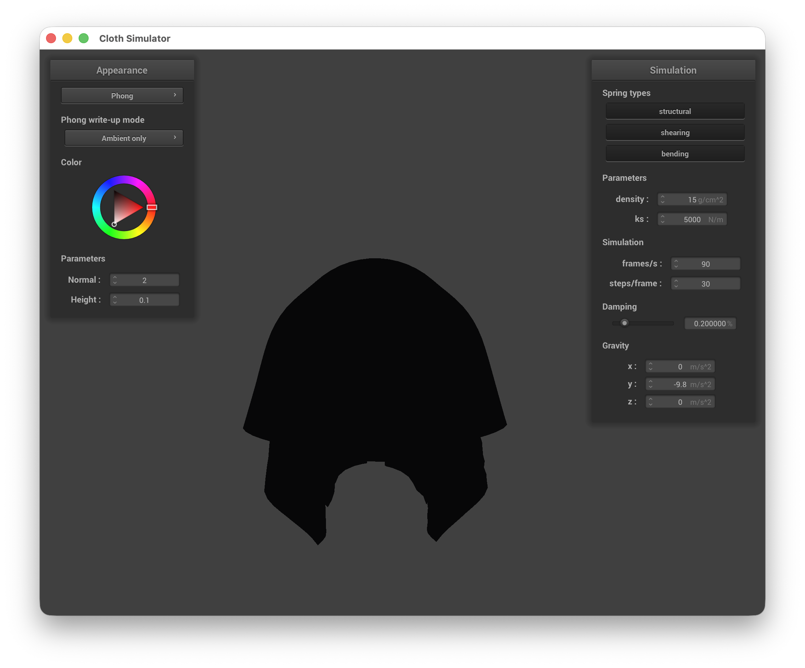
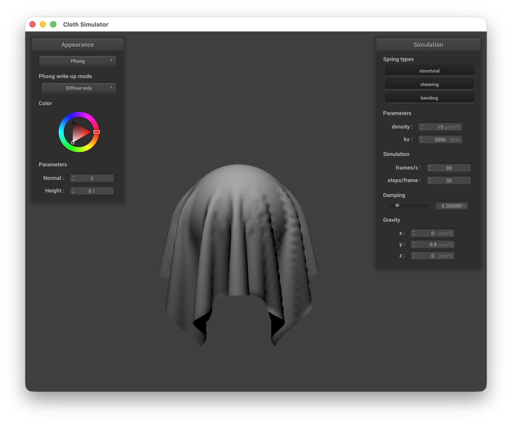
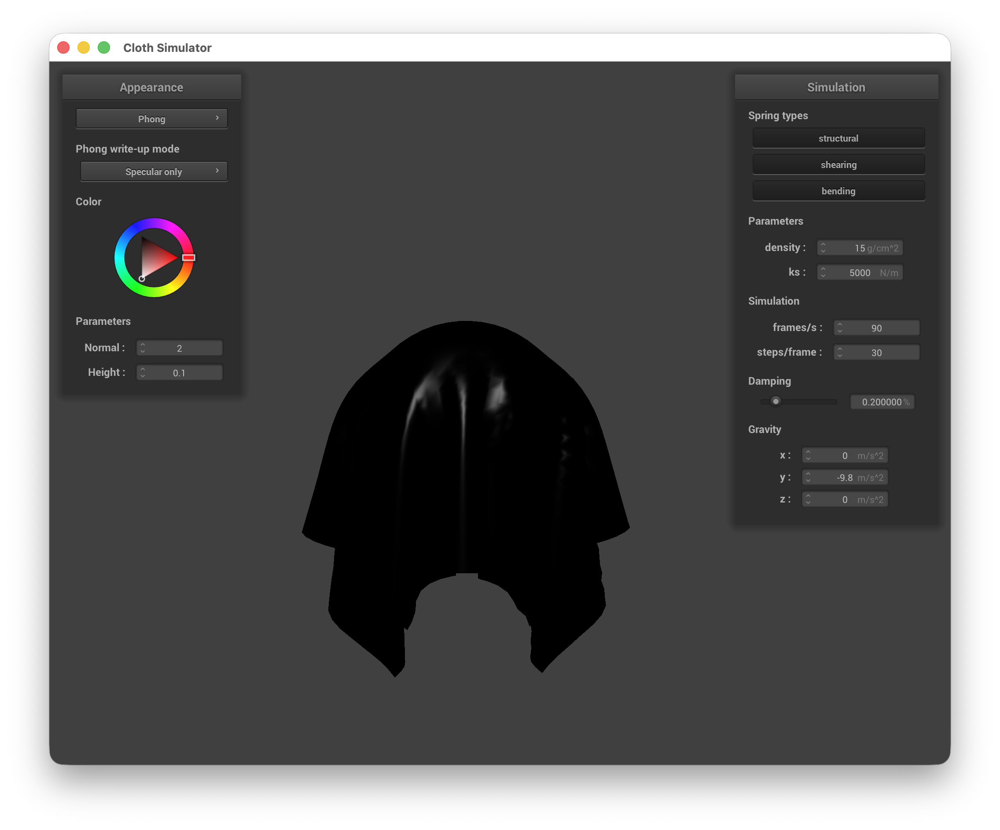
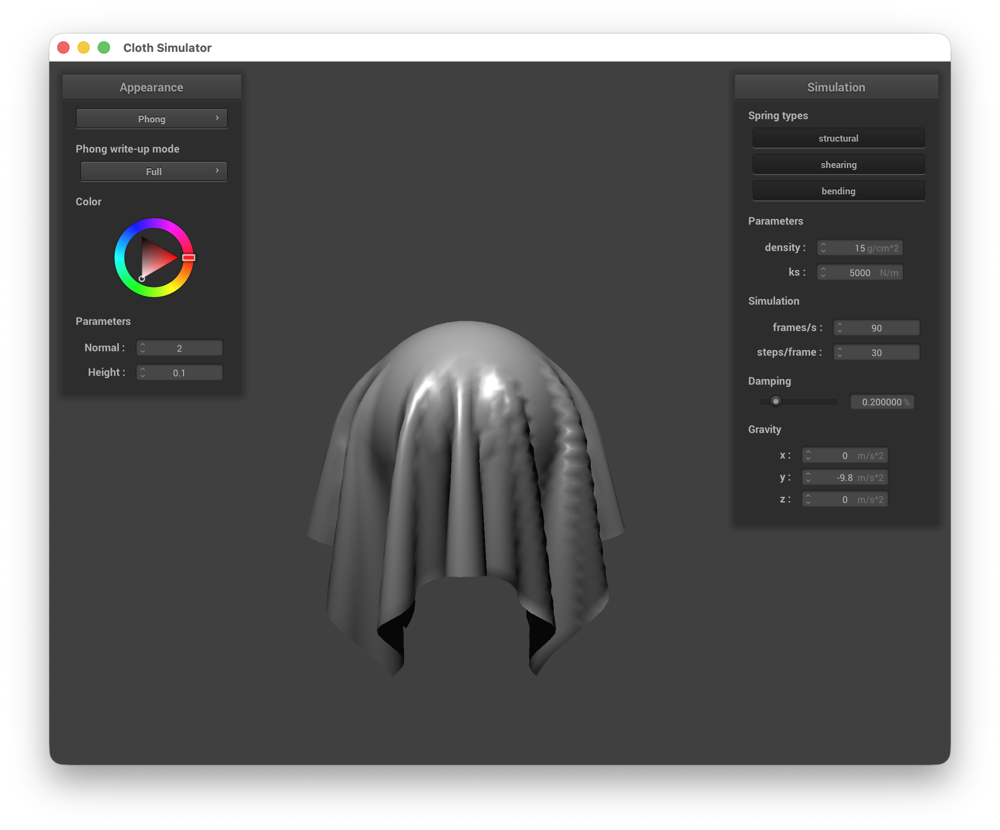
Task 3 — Texture mapping with a custom image in /textures
Texture.frag implements the minimal mapping required by the spec: out_color = texture(u_texture_1, v_uv) (with alpha forced to 1).
The mesh builder already assigns UVs per triangle vertex; the GPU interpolates v_uv across each face before the fragment shader samples the 2D texture.
For the custom texture deliverable we added textures/personal.jpg (a 512×512 RGB JPEG) and changed ClothSimulator::load_textures() so texture unit 1 loads that file instead of the stock texture_1.png.
The right-hand image below keeps the original PNG path for comparison on the same scene and camera style.
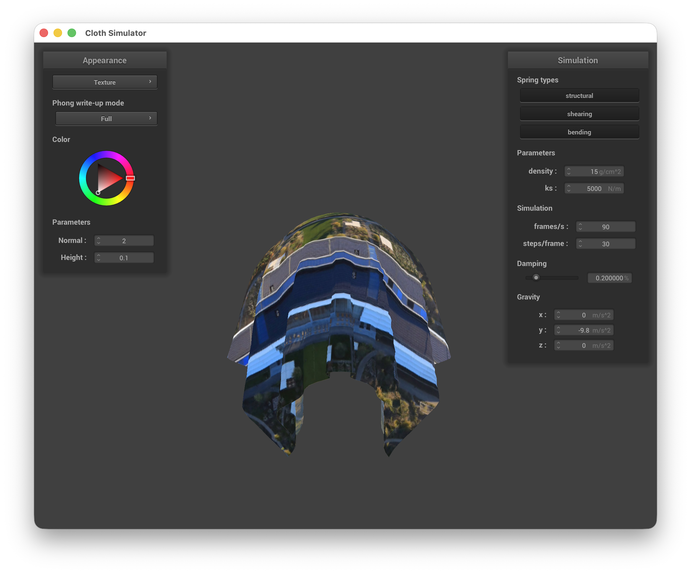
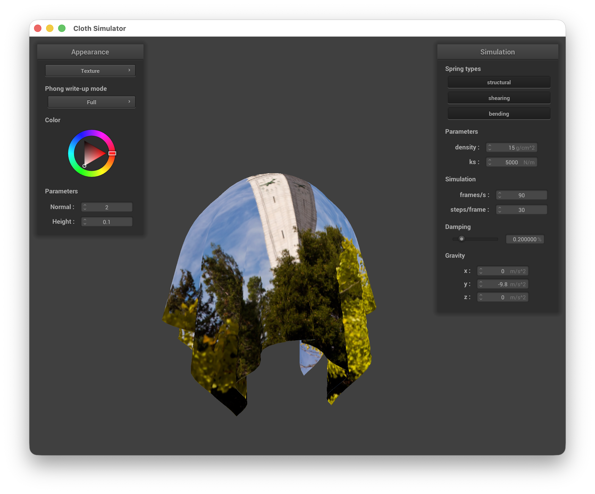
personal.jpg on the cloth (left) versus the default texture_1.png appearance (right).Task 4 — Bump mapping (cloth and sphere)
Bump mapping lies about surface orientation: we never move vertices; we only perturb the shading normal using a height field \(h(u,v)\) stored in a texture.
We read \(h\) from the red channel of u_texture_2, take handout-style forward finite differences in UV space using the pixel dimensions in u_texture_2_size, and scale by u_height_scaling and u_normal_scaling:
\[
dU = \bigl(h(u+1/w,\,v) - h(u,v)\bigr)\, k_h\, k_n,\quad
dV = \bigl(h(u,\,v+1/h) - h(u,v)\bigr)\, k_h\, k_n.
\]
In tangent/object space the undisturbed normal is \((0,0,1)\); after perturbation we use \(\mathbf{n}_o \propto (-dU,\,-dV,\,1)\), normalize it, and transform into world space with a TBN matrix built from the interpolated world normal and tangent (we Gram–Schmidt the tangent so it stays perpendicular to \(\mathbf{n}\), then set \(\mathbf{b} = \mathbf{n}\times\mathbf{t}\)).
We then evaluate the same Blinn–Phong lighting as Phong.frag but with the displaced normal—so highlights crawl across the surface as if geometry were detailed, even though the silhouette stays that of the coarse mesh.
The homework requires a height map that is not the default texture_2.png.
In code we bind textures/texture_3.png to u_texture_2 so bump and displacement (below) always share exactly the same height function for a fair comparison.
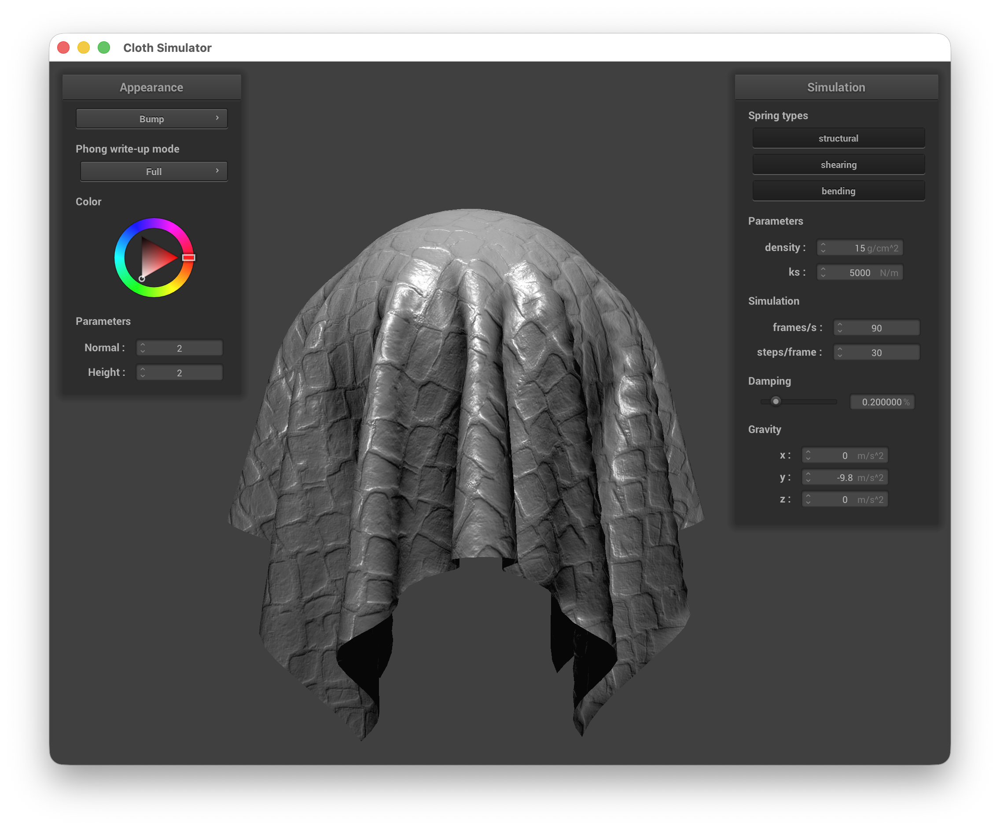
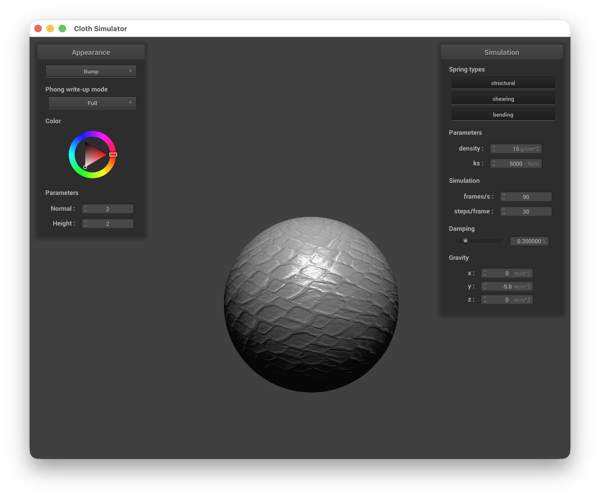
Task 4.2 — Displacement mapping on the sphere (same texture)
Displacement.vert applies the spec’s geometric update in model space before the model matrix:
\(\mathbf{p}' = \mathbf{p} + \mathbf{n}\, h(u,v)\, k_h\) with \(\mathbf{n}\) the unit vertex normal and \(k_h = \texttt{u\_height\_scaling}\).
Displacement.frag is copied from Bump.frag so lighting still uses a bump-style normal derived from the same height map—now evaluated on the displaced positions—so highlights stay roughly consistent with the height ridges.
Comparing bump vs displacement in words: bump mapping keeps the sphere and cloth boundaries perfectly smooth; all “detail” is lighting illusion. Displacement mapping moves vertices outward or inward—so folds on the cloth cast real tiny shadows at silhouettes, and the sphere’s outline becomes bumpy when the height map varies. With identical \(h(u,v)\) and slider settings, bump tends to look a bit sharper in micro-detail (it can exaggerate normal change without paying the cost of extra geometry), while displacement looks more “physical” at silhouettes but can alias badly if the mesh is too coarse.
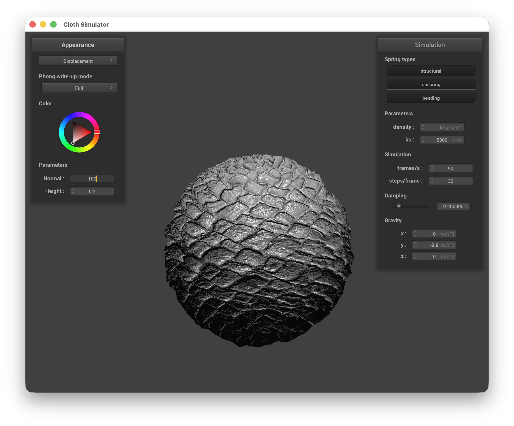
Sphere tessellation (-o / -a) vs bump and displacement:
We ran ./build/clothsim -f scene/sphere.json -o 16 -a 16 and again with -o 128 -a 128.
For bump only, changing tessellation mostly changes sampling quality of the normals; the sphere’s outer rim stays a smooth circle because vertex positions never leave the analytic sphere.
For displacement, coarse tessellation (16×16) turns the height field into obvious “stair steps” along latitude rings—the GPU simply does not have enough vertices to approximate a smooth offset surface.
Fine tessellation (128×128) gives enough samples that the displaced sphere closely follows the height texture with a much smoother silhouette.
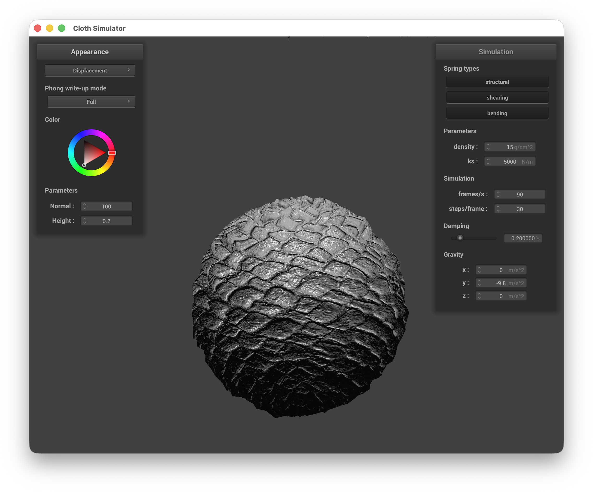
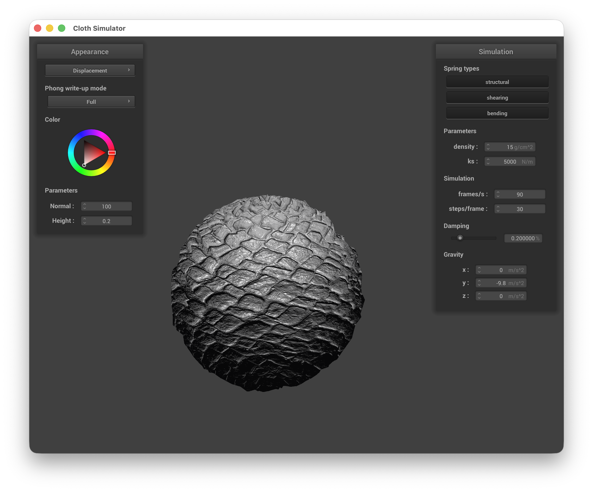
-o 16 -a 16 (left) vs -o 128 -a 128 (right).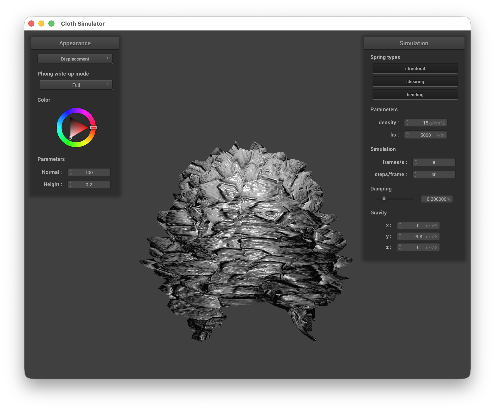
u_texture_2 height map as bump.Task 5 — Environment-mapped reflections (mirror shader)
Mirror.frag approximates a perfect mirror without tracing rays.
We form the incident direction from the camera to the fragment, \(\mathbf{i} = \mathrm{normalize}(\mathbf{p} - \mathbf{u\_cam\_pos})\), reflect it about the unit world normal using reflect, and sample the prefiltered samplerCube u_texture_cubemap along the reflected direction—equivalent to looking up “what color sky would this mirror pixel see” in HW3’s environment-light spirit, but in a single texture lookup (no shadowing between cloth and sphere).
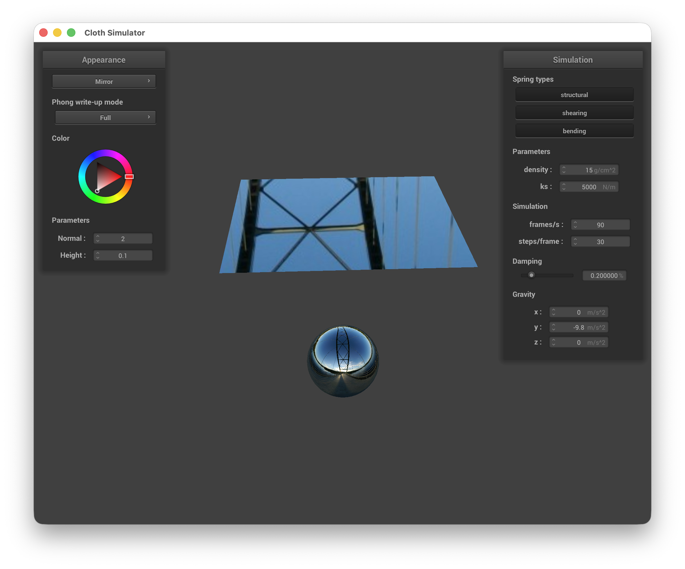
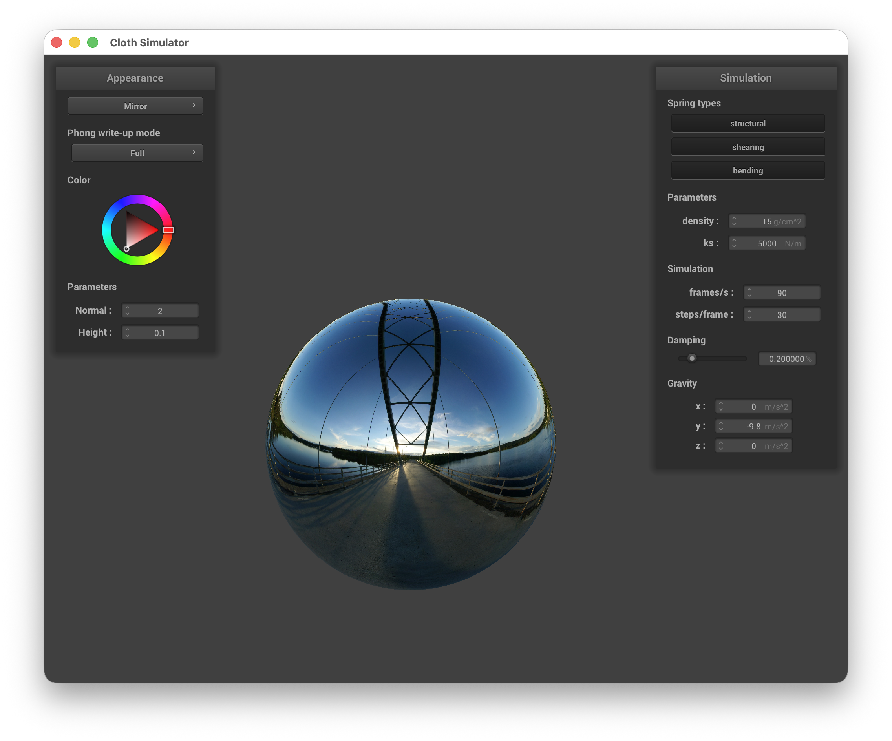
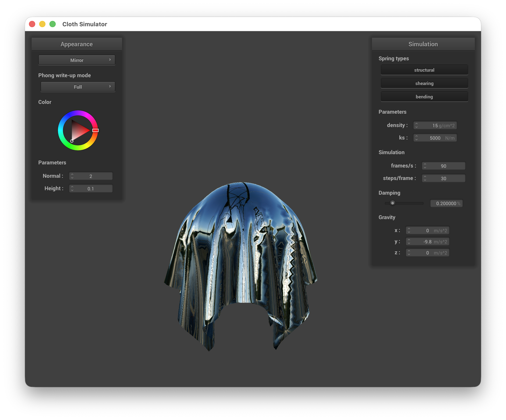
Extra Credit (2 pts) — Custom.vert / Custom.frag
The Part 5 page lists an Extra Credit Opportunity (2 pts): build your own shader (and optionally extend loadObjectsFromFile() in main.cpp), with suggestions such as color controls, a time uniform, new textures or objects, or blending ideas from all five required shaders.
I focused on the shader route rather than adding a new scene primitive, because Part 5 was already about understanding how small GPU programs can be recombined into new materials.
The final effect is meant to look like a glossy, color-shifting reflective fabric: it still carries the custom Apple Park texture, but the edges pick up rainbow-like iridescence and environment reflections.
Implementation-wise, Custom.vert stays close to Default.vert: it transforms vertex positions, normals, tangents, and UV coordinates into the same varyings used by the other shaders.
The extra-credit work is in Custom.frag.
First, I sample u_texture_1 at v_uv and multiply it by u_color.rgb, which means the Appearance color wheel still acts as an interactive tint over the custom texture.
Then I compute a simple diffuse term from u_light_pos and u_light_intensity so the material still responds to the point light rather than appearing as a flat decal.
Next, I reuse the mirror shader idea: form the incident direction from the camera to the surface, reflect it about the world normal, and sample u_texture_cubemap along that reflected direction.
Instead of replacing the base color with the cubemap completely, I blend it using a Fresnel-style factor
\[
(1-\max(\mathbf{n}\cdot\mathbf{v},0))^{2.2},
\]
so front-facing regions keep more of the texture while grazing angles become glossier and more reflective.
The final ingredient is a small procedural iridescence term.
I compute a phase from the viewing angle and world position,
sin(14.0 * (1.0 - ndotv) + dot(p, vec3(2.2, 3.1, 1.7))), then map that scalar through a compact hue_to_rgb helper.
This is not physically exact thin-film interference, but visually it has the right behavior: as the normal turns away from the camera, the color shifts into cyan, purple, and green bands.
The shader therefore combines several of the required Part 5 ideas — texture mapping, diffuse lighting, cubemap reflection, view-dependent blending, and procedural color — into one material.
I did not add a u_time uniform or edit loadObjectsFromFile(); those would be natural extensions if I wanted animated color bands or a new object to test the shader on.
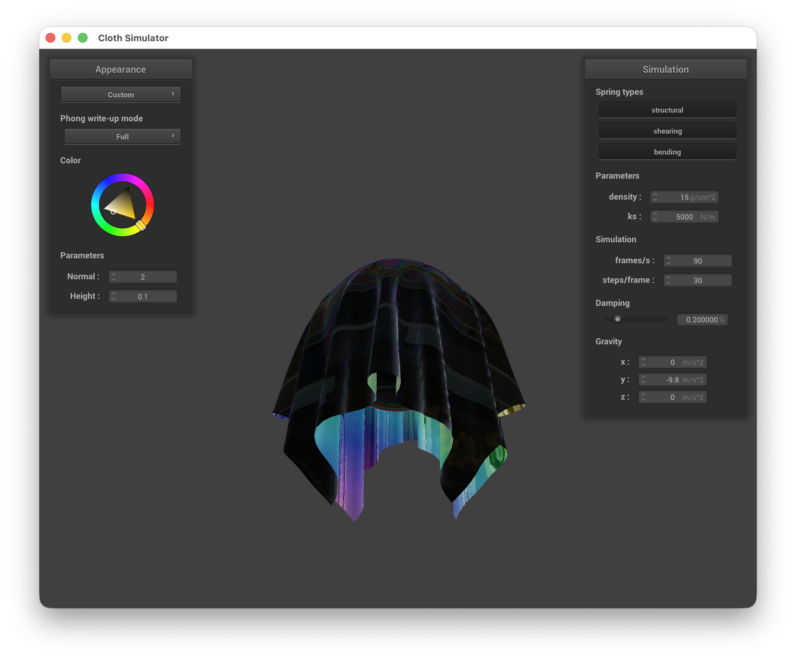
sphere.json. The screenshot shows the Apple Park texture darkened by lighting on the cloth, reflective cubemap colors along the lower rim, and a visible iridescent purple/cyan band from the procedural hue term.Part 5 — Summary
We walked the full stack from per-vertex transforms to per-pixel shading: Lambert diffuse, Blinn–Phong with an explicit term-by-term breakdown, decal-style texture mapping with a user-supplied JPEG, height-driven bump and displacement with a non-default u_texture_2 source, tessellation-sensitive displacement on the sphere, cubemap reflections, and finally a custom shader that reuses the same uniforms to blend multiple effects.
Together this matches the Part 5 learning goal: understand how GPU programs replace minutes-long CPU ray casts for interactive material design.
Extra Credit — Additional cloth simulation features
The extra credit page suggests adding extra technical features to the cloth simulation itself, such as wind, stronger self-collision, movable objects, and new collision primitives. I implemented these as incremental, mostly opt-in features so the required Parts 1–5 behavior remains unchanged unless the EC controls or scenes are explicitly used.
EC 1 — Spatially varying wind force
For the first extra-credit feature, I added wind as a spatially varying external acceleration.
The standard simulation already accepts a list of external accelerations (gravity), but gravity is constant over the whole cloth.
Wind is more interesting if neighboring point masses experience slightly different pushes, so in Cloth::simulate I add an extra acceleration only when cp->enable_wind is true:
\[
\mathbf{a}_{wind}(\mathbf{p}) = \mathbf{d}\;s\;\left(0.5 + 0.5 \sin(f(x + 0.7y + 0.5z))\right)
\]
where \(\mathbf{d}\) is a mostly forward/upward wind direction, \(s\) is wind_strength, and \(f\) is wind_frequency.
This is not a full aerodynamic pressure model, but it captures the key visual idea: the cloth is no longer pulled only downward, and different regions billow at different strengths.
I exposed the feature in the GUI under Wind (EC) with a toggle, strength field, and frequency field.
Because enable_wind defaults to false, all required rubric screenshots and baseline simulations are unaffected unless the toggle is turned on.
The images below compare the same pinned2.json cloth with wind disabled, moderate wind enabled, and stronger wind enabled.
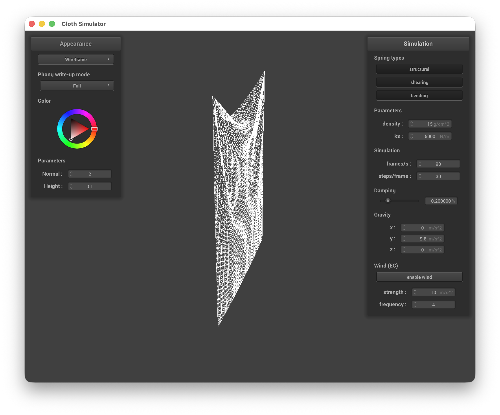
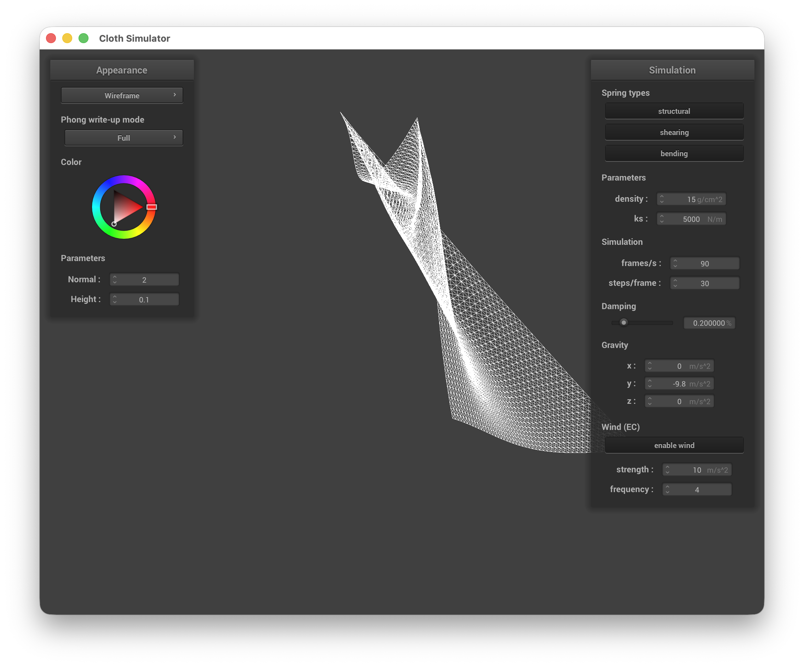
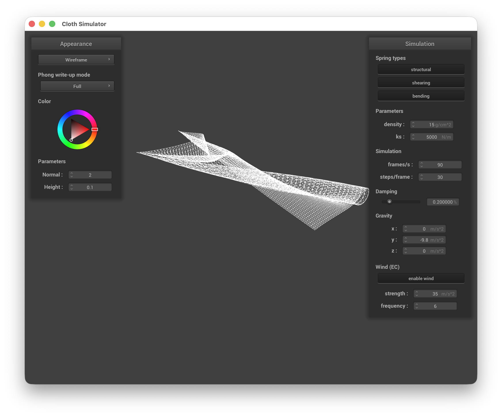
EC 2 — New collision primitive: axis-aligned box
For the second extra-credit feature, I added a new 3D collision primitive: an axis-aligned box.
This goes beyond the starter sphere and plane because the cloth now has to interact with a bounded object that has flat faces, sharp edges, and corners.
I added a new Box class in src/collision/box.h and src/collision/box.cpp, registered collision/box.cpp in src/CMakeLists.txt, and extended main.cpp so scene JSON files can contain a "box" object with "min", "max", and "friction" fields.
The test scene scene/box.json places a rectangular collision box below a horizontal cloth, so the cloth falls and drapes over the top and sides.
The collision test uses a swept segment-vs-AABB slab calculation from last_position to position.
This is more robust than only asking whether the final point is inside the box, because a fast-moving point mass can cross through a thin face between substeps.
For each axis, I compute the interval of segment parameters where the point is inside that slab; the intersection of the three intervals gives the first time the mass enters the box.
If the mass intersects the box, I compute the tangent point on the hit face, offset it slightly along the face normal, and apply the same friction idea as sphere and plane collision:
pm.position = pm.last_position + (1 - friction) * correction.
This keeps the point mass just outside the box rather than exactly on a face.
Rendering the box required one extra practical fix. If the visible cube and the collision volume are exactly the same size, the cube faces and corners can visually poke through the cloth even when the collision math is working, especially in wireframe or near sharp edges. To avoid that, I render the box slightly smaller than the collision AABB, similar in spirit to how the sphere renderer draws a slightly smaller sphere than the collision radius. The cloth therefore collides with the full invisible box volume, but the visible shaded cube sits just inside it, giving a clean gap at corners and preventing z-fighting/popping in the screenshots.
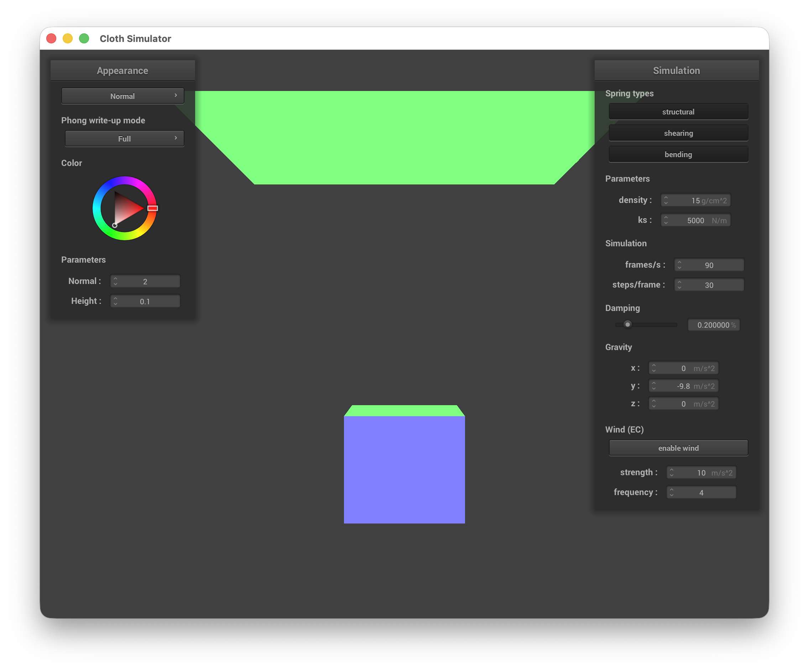
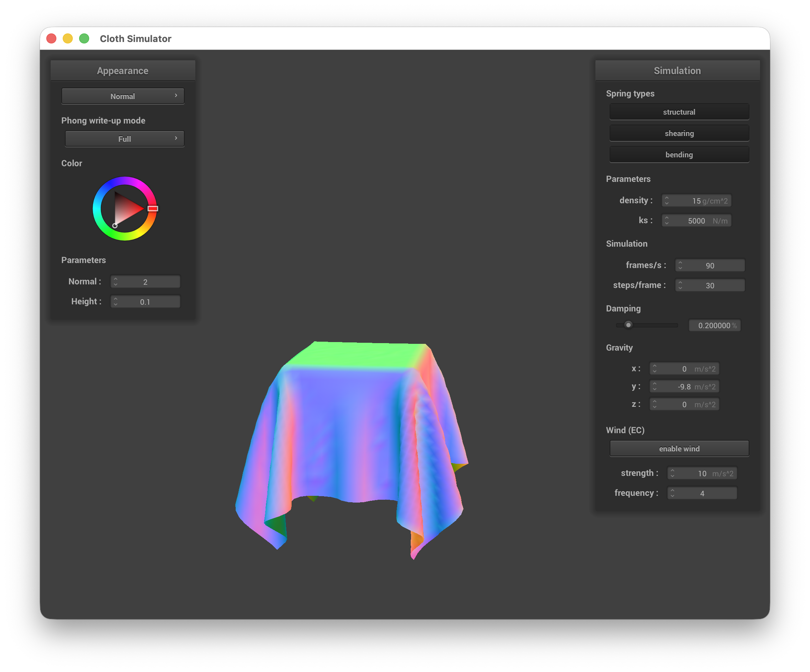
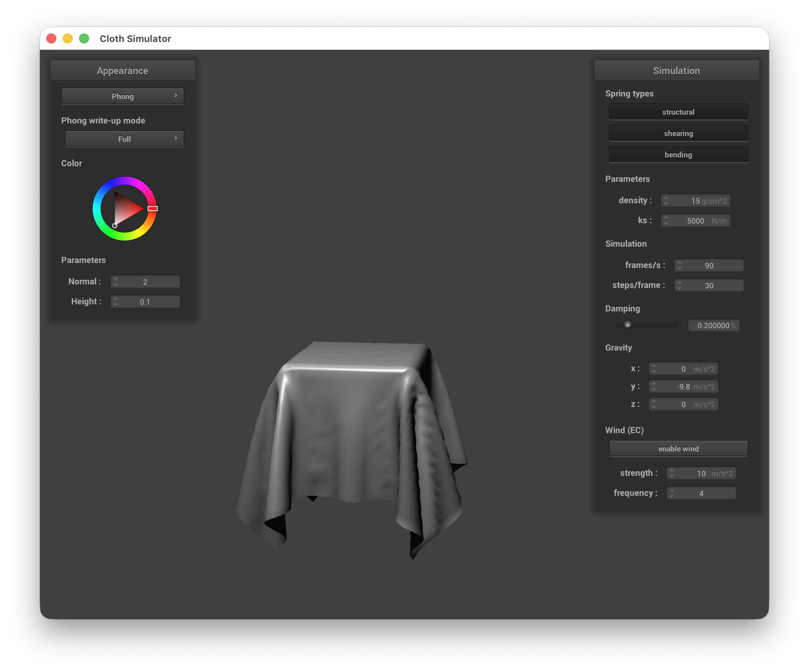
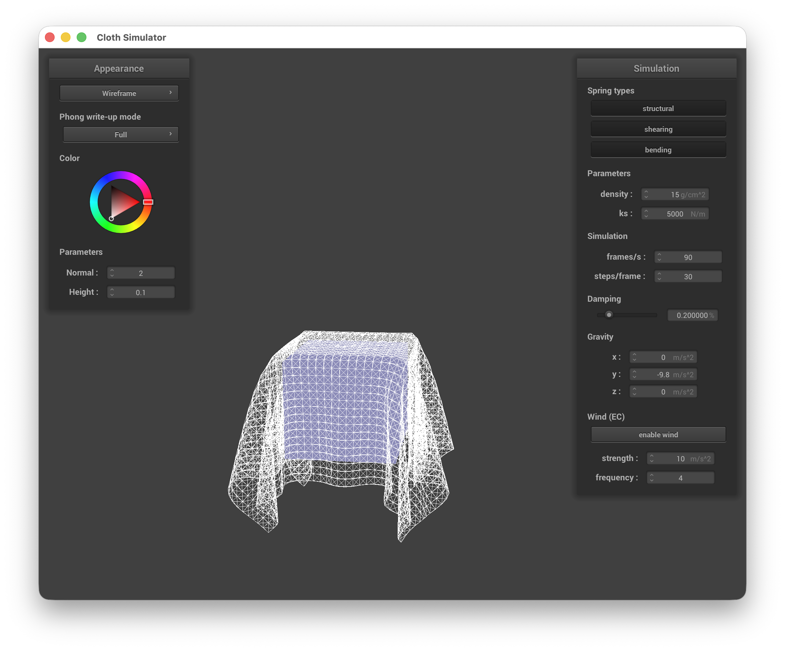
EC 3 — Movable collision sphere in the GUI
For the third extra-credit feature, I added the ability to move a collision object directly from the GUI.
When the loaded scene contains a Sphere, ClothSimulator::initGUI now detects it with dynamic_cast<Sphere *> and adds a Move sphere (EC) control block with editable x, y, and z fields.
The Sphere class exposes get_origin() and set_origin(), so changing one of these GUI values immediately changes the sphere center used by both rendering and collision detection.
This is useful because the same cloth and the same collision radius can generate very different drapes depending on where the obstacle is placed.
After moving the sphere, I reset the simulation with R so the cloth falls onto the new obstacle position from the same starting state.
Moving the sphere left makes the pinned cloth drape asymmetrically, while raising the sphere makes the cloth contact earlier and rest higher with a tighter dome over the collision object.
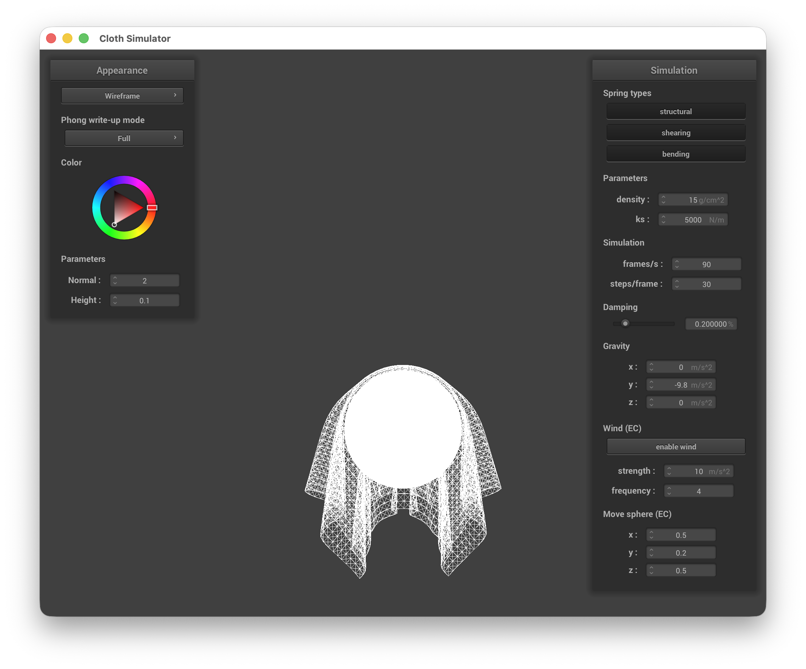
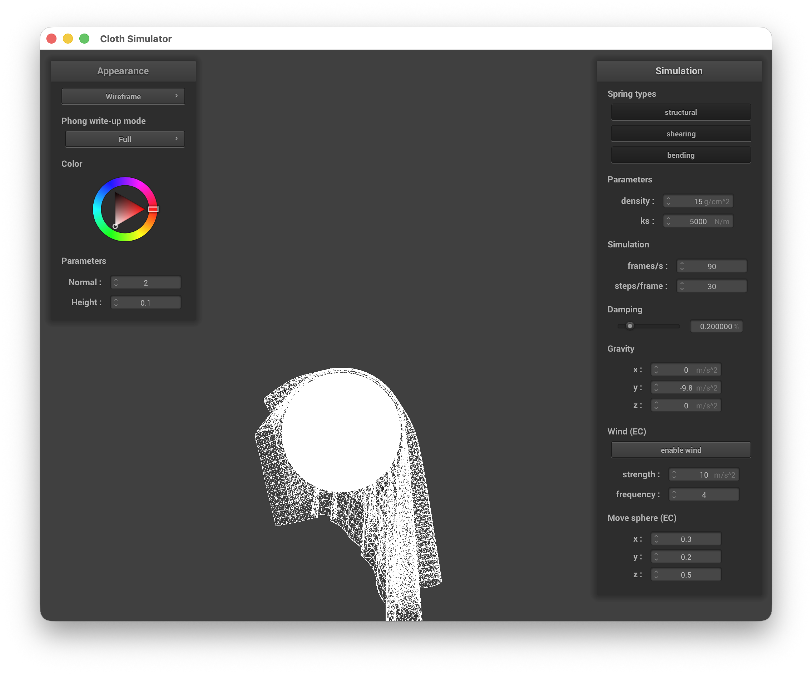
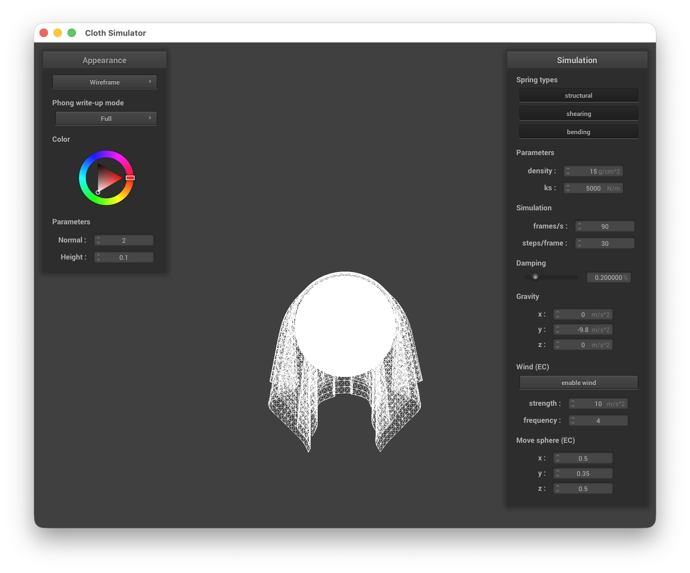
Sphere::collide reads the current origin each frame.EC 4 — More robust self-collision with neighboring hash buckets
For the final extra-credit feature, I improved the Part 4 self-collision scheme while keeping the same spatial hashing structure. The base implementation hashes every point mass into one 3D box and only checks candidate point masses that share the exact same hash key. This is fast, but it has a boundary-case weakness: two point masses can be closer than \(2 \cdot \text{thickness}\) while landing in adjacent spatial boxes, so the original lookup would never compare them.
I changed Cloth::self_collide to check the current bucket plus all neighboring buckets in a \(3 \times 3 \times 3\) neighborhood.
That means each mass checks up to 27 hash buckets instead of 1, which is still dramatically cheaper than the naive \(O(n^2)\) all-pairs approach but catches close contacts across bucket boundaries.
To keep the hash math consistent, I factored the bucket dimensions into helpers (box_size_x, box_size_y, box_size_z) and reused the same weighted-prime hash combination for both the current box and its neighbors.
The correction rule stays the same as Part 4: if a candidate is closer than \(2 \cdot \text{thickness}\), we add a vector that would separate the pair to that distance, average all corrections, and scale by 1 / simulation_steps to avoid sudden jumps.
The qualitative improvement is subtle but important: folds remain separated even when cloth layers lie near hash-cell boundaries. In the screenshots below, the cloth still forms a pile and may remain slightly bouncy, as the spec warns, but close layers are more consistently repelled instead of occasionally slipping past each other at cell edges.
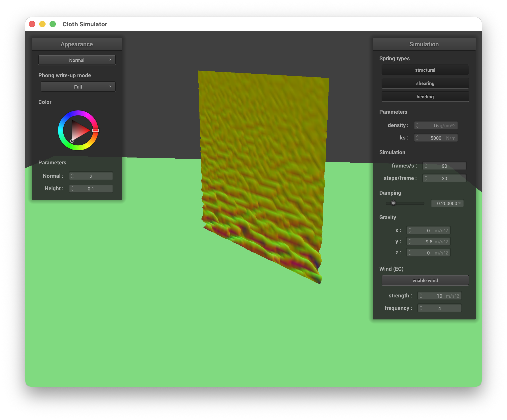
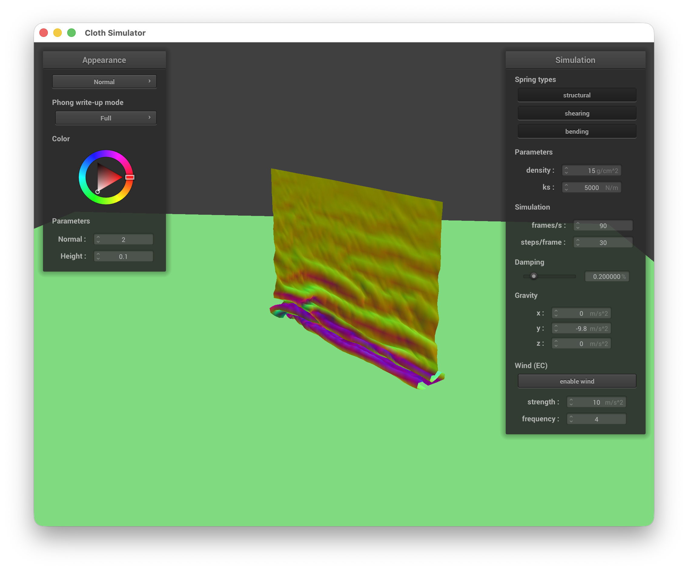
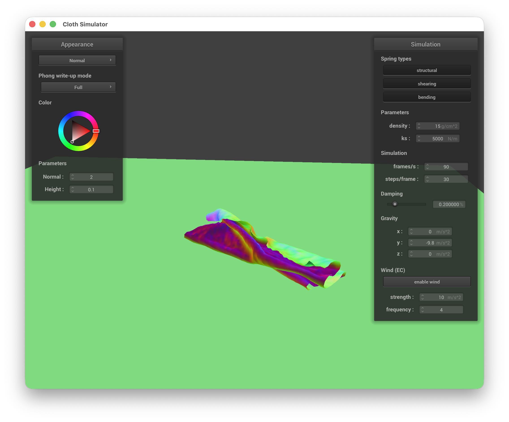